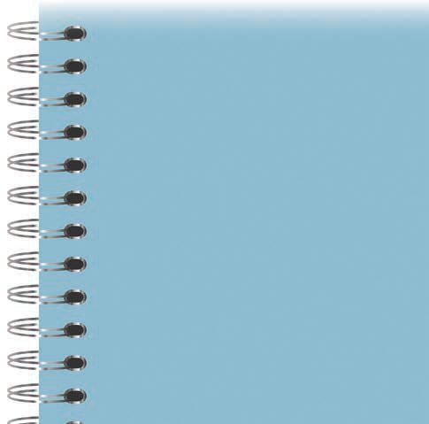
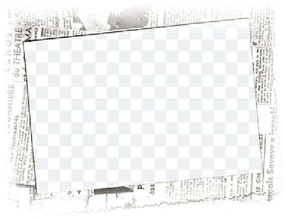
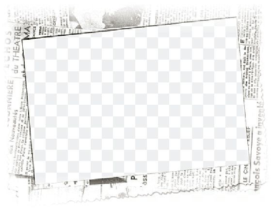
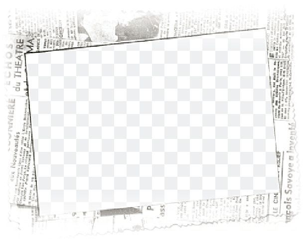
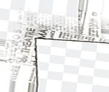
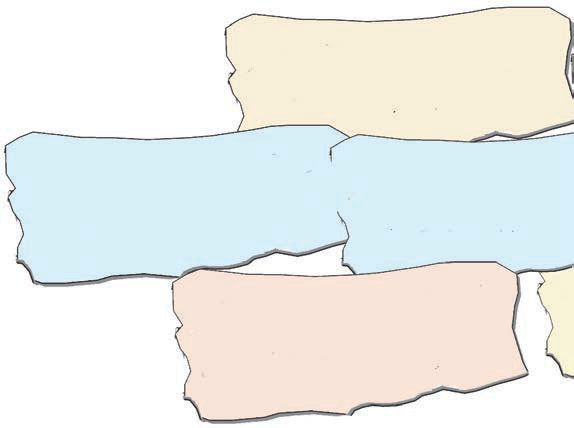
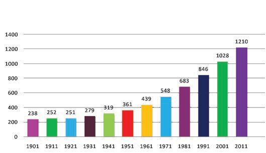

<!DOCTYPE html>
<html lang="ml">
<head>
  <meta charset="utf-8">
  <meta name="viewport" content="width=device-width, initial-scale=1.0">
  <title>Chapter 4 (Pages 67-86) - Class 9 Basic_science</title>
  <style>

:root {
  --bg-color: #fcfcfd;
  --card-bg: #ffffff;
  --text-color: #1e293b;
  --text-muted: #64748b;
  --primary-color: #0284c7;
  --primary-light: #e0f2fe;
  --border-color: #e2e8f0;
  --radius: 10px;
  --shadow: 0 4px 6px -1px rgb(0 0 0 / 0.05), 0 2px 4px -2px rgb(0 0 0 / 0.05);
}

body {
  font-family: -apple-system, BlinkMacSystemFont, "Segoe UI", Roboto, "Noto Sans Malayalam", "Manjari", "Gayathri", sans-serif;
  background-color: var(--bg-color);
  color: var(--text-color);
  line-height: 1.8;
  font-size: 1.1rem;
  margin: 0;
  padding: 0;
}

.container {
  max-width: 860px;
  margin: 0 auto;
  padding: 2.5rem 1.5rem 5rem 1.5rem;
}

header {
  margin-bottom: 2.5rem;
  padding-bottom: 1.5rem;
  border-bottom: 2px solid var(--border-color);
}

.badge-row {
  display: flex;
  gap: 0.5rem;
  margin-bottom: 0.75rem;
  flex-wrap: wrap;
}

.badge {
  display: inline-block;
  font-size: 0.75rem;
  font-weight: 700;
  text-transform: uppercase;
  letter-spacing: 0.05em;
  padding: 0.25rem 0.65rem;
  border-radius: 9999px;
  background: var(--primary-light);
  color: var(--primary-color);
}

.badge-medium {
  background: #fef3c7;
  color: #b45309;
}

.badge-class {
  background: #dcfce7;
  color: #15803d;
}

h1 {
  font-size: 2.1rem;
  font-weight: 800;
  margin: 0.5rem 0 1rem 0;
  line-height: 1.3;
  color: #0f172a;
}

.nav-bar {
  display: flex;
  justify-content: space-between;
  margin: 1.5rem 0;
  font-size: 0.95rem;
  flex-wrap: wrap;
  gap: 0.5rem;
}

.nav-bar a {
  color: var(--primary-color);
  text-decoration: none;
  font-weight: 600;
  padding: 0.5rem 1rem;
  border-radius: var(--radius);
  background: var(--card-bg);
  border: 1px solid var(--border-color);
  transition: all 0.2s ease;
}

.nav-bar a:hover {
  background: var(--primary-light);
  border-color: var(--primary-color);
}

.nav-bar .disabled {
  color: var(--text-muted);
  pointer-events: none;
  border-color: transparent;
  background: transparent;
}

.page-section {
  background: var(--card-bg);
  border: 1px solid var(--border-color);
  border-radius: var(--radius);
  box-shadow: var(--shadow);
  padding: 2rem;
  margin-bottom: 2.5rem;
}

.page-header {
  display: flex;
  align-items: center;
  justify-content: space-between;
  margin-bottom: 1.25rem;
  padding-bottom: 0.5rem;
  border-bottom: 1px dashed var(--border-color);
}

.page-number {
  font-size: 0.8rem;
  font-weight: 700;
  text-transform: uppercase;
  color: var(--text-muted);
  letter-spacing: 0.05em;
}

.page-content p {
  margin: 0 0 1.25rem 0;
  white-space: pre-wrap;
  word-break: break-word;
}

.page-content p:last-child {
  margin-bottom: 0;
}

.diagram-card {
  margin: 2rem 0;
  text-align: center;
  background: #f8fafc;
  border: 1px solid var(--border-color);
  border-radius: var(--radius);
  padding: 1rem;
  overflow: hidden;
}

.diagram-card img {
  max-width: 100%;
  height: auto;
  border-radius: calc(var(--radius) - 4px);
  display: inline-block;
  box-shadow: 0 2px 4px rgba(0,0,0,0.04);
}

.diagram-card figcaption {
  font-size: 0.85rem;
  color: var(--text-muted);
  margin-top: 0.75rem;
  font-weight: 500;
}

footer {
  margin-top: 3rem;
  padding-top: 2rem;
  border-top: 2px solid var(--border-color);
}

  </style>
</head>
<body>
  <div class="container">
    <header>
      <div class="badge-row">
        <span class="badge badge-class">Class 9</span>
        <span class="badge badge-medium">Malayalam Medium</span>
        <span class="badge">Basic science</span>
        <span class="badge">Part 1</span>
      </div>
      <h1>Chapter 4 (Pages 67-86)</h1>
      <div class="nav-bar"><a href="part_1_chapter_03.html">← Chapter 3 (Pages 47-66)</a><a href="index.html">☰ Index</a><a href="part_1_chapter_05.html">Chapter 5 (Pages 87-104) →</a></div>
    </header>
    <main>
      <section class="page-section" id="page-67">
  <div class="page-header"><span class="page-number">Page 67</span></div>
  <figure class="diagram-card" id="fig_ch04_p067_01"><figcaption>Figure fig_ch04_p067_01 (Page 67)</figcaption></figure>
  <figure class="diagram-card" id="fig_ch04_p067_02"><figcaption>Figure fig_ch04_p067_02 (Page 67)</figcaption></figure>
  <figure class="diagram-card" id="fig_ch04_p067_03"><figcaption>Figure fig_ch04_p067_03 (Page 67)</figcaption></figure>
  <figure class="diagram-card" id="fig_ch04_p067_04"><figcaption>Figure fig_ch04_p067_04 (Page 67)</figcaption></figure>
  <figure class="diagram-card" id="fig_ch04_p067_05"><figcaption>Figure fig_ch04_p067_05 (Page 67)</figcaption></figure>
  <figure class="diagram-card" id="fig_ch04_p067_06"><figcaption>Figure fig_ch04_p067_06 (Page 67)</figcaption></figure>
  <figure class="diagram-card" id="fig_ch04_p067_07"><figcaption>Figure fig_ch04_p067_07 (Page 67)</figcaption></figure>
  <figure class="diagram-card" id="fig_ch04_p067_08"><figcaption>Figure fig_ch04_p067_08 (Page 67)</figcaption></figure>
  <figure class="diagram-card" id="fig_ch04_p067_09"><figcaption>Figure fig_ch04_p067_09 (Page 67)</figcaption></figure>
  <figure class="diagram-card" id="fig_ch04_p067_10"><figcaption>Figure fig_ch04_p067_10 (Page 67)</figcaption></figure>
  <figure class="diagram-card" id="fig_ch04_p067_11"><figcaption>Figure fig_ch04_p067_11 (Page 67)</figcaption></figure>
  <figure class="diagram-card" id="fig_ch04_p067_12"><figcaption>Figure fig_ch04_p067_12 (Page 67)</figcaption></figure>
  <figure class="diagram-card" id="fig_ch04_p067_13"><figcaption>Figure fig_ch04_p067_13 (Page 67)</figcaption></figure>
  <figure class="diagram-card" id="fig_ch04_p067_14"><figcaption>Figure fig_ch04_p067_14 (Page 67)</figcaption></figure>
  <div class="page-content">
    <p>gŦDzÄ‹Žv}†›¡e ›sšŽ“›†Dzš–c</p>
    <p>ő€“ce“Ǭ‚Œš
v}†</p>
    <p>x›“Dz“ǚsǫ¢‹„u‚›¡xƮšťƂ¢‚Dzs
†}ˆ}›âŒāǫˆš›¢ÚĬ‚Ĭ§mųšƴŒǯ
x›‚§–š šŽ†›Œ†›Ʊƣš
Žœ‚››ƴ¢‹„u‚›¡xƮš“ų‚š§</p>
    <p>z</p>
    <p>Œ›sš“sš”ā‘c
Œ›ssƱœDzā‘c</p>
    <p>ŒšƱu†›Å¢„”s
‚‚ǵāǫ</p>
    <p>„ǵ›Œį†›Œ
†›Ʊƣš–‹sǫ</p>
    <p>”ÞŒš¢sůu“Ã
¡Œ¢źš}sž}›
¡‰›–c</p>
    <p>–ǵ‚ũ“c†›•§ˆä
“Œš†œ‚›†Dzš
“Dz“ǚ</p>
    <p>–ǵ‚ũ‹Žv}†š
ǚšˆ†āǫ</p>
    <p>q¢Žš “DzޛڝcŽšȹciƀ“Ž¢ĹĬ
e}›ǚš†e“sš”āÇ
z</p>
    <p>ˆŽƱŽšȹ¢Ĺš}c–Œž—¢Ĺš}c
ˆš›¢ÚĬiŎ“š„›‚ǵāǫ</p>
    <p>‹š“›Žšȹś¡ź–šŒž—›s–šƠśs
e‹›ƾŗ›Úš›Žšȹś†§†ƴs››ĞǬ
†›Å¢„”āǫ
¡ŒšĹcz†¡ĹcƂ‚›†› œsŽ›Úų
e¢ š–‹ ¢šs–‹ †›Œ†›ÅƣšĹ›Æ
ŽĬšŒ¡‚šŽ x›ŦƩš›–cǚš†ā¡‘
Ƃ‚›†› œsŽ›ÚųiˆŽ›–‹ ŽšzDz–‹ 
mų›ā¡†ŽĬ –‹sǫ
e ›sšŽc¢sůś†c–cǚš†āÇڝ
Œš›¢“Å‚›Ž›ă›ĞĬ§mÿ›c¢sůś†§
¢ŒÆ£Ú†Æsųx›–“›¢”•š ›
sšŽāÇ‹Žv}†›ÆiÇ¡ƀ}Ĺ››ĞĬ§</p>
    <p>†›Œ†›ÅƣšsšŽDz†›Å“—“›‹šuā‘¡}
†›ũĹ›ƽšĹ ¢sš}‚›–c“› š†c</p>
    <p>z†š ›ˆ‚Dz“Dz“ǚ“›ˆ“ceшžÅĴ“
ŒšÚų‚›†§–ǵ‚ũ–ǵ‹š“ŒǬ‹Žv}†š
ǚšˆ†āÇ</p>
    <p>†›“›Æ‹Žv}†›ÆmŅ‹šuā‘cˆĞ›ss‘ŒĬ§#s¡Ĭŝs</p>
    <p>ǢšÄ¢Å§-&lt;</p>
    <p>67</p>
  </div>
</section><section class="page-section" id="page-68">
  <div class="page-header"><span class="page-number">Page 68</span></div>
  <figure class="diagram-card" id="fig_ch04_p068_01"><figcaption>Figure fig_ch04_p068_01 (Page 68)</figcaption></figure>
  <figure class="diagram-card" id="fig_ch04_p068_02"><figcaption>Figure fig_ch04_p068_02 (Page 68)</figcaption></figure>
  <figure class="diagram-card" id="fig_ch04_p068_03"><figcaption>Figure fig_ch04_p068_03 (Page 68)</figcaption></figure>
  <figure class="diagram-card" id="fig_ch04_p068_04"><figcaption>Figure fig_ch04_p068_04 (Page 68)</figcaption></figure>
  <figure class="diagram-card" id="fig_ch04_p068_05"><figcaption>Figure fig_ch04_p068_05 (Page 68)</figcaption></figure>
  <figure class="diagram-card" id="fig_ch04_p068_06"><figcaption>Figure fig_ch04_p068_06 (Page 68)</figcaption></figure>
  <figure class="diagram-card" id="fig_ch04_p068_07"><figcaption>Figure fig_ch04_p068_07 (Page 68)</figcaption></figure>
  <figure class="diagram-card" id="fig_ch04_p068_08"><figcaption>Figure fig_ch04_p068_08 (Page 68)</figcaption></figure>
  <div class="page-content">
    <p>e Dzšc</p>
    <p>gŦDzť¡‰›–c
‹Žv}†¡}
–“›¢”•‚s¡‘ڝ›ă§
㚖›ƴ e“‚Ž›ƀ›ă ¡–Œ›†šƱ ƂŠŰ
ś¡Ƃ–Þ‹šuāǫNjŗ›Úž
†ƣ¡}</p>
    <p>ŽšzDzś¡ź</p>
    <p>£““›</p>
    <p>Dz“c</p>
    <p>osDz“c p¢Ž¢ˆš¡ ˆŽ›ˆš›Úų‚›†§
¡‰ƴ –c“›</p>
    <p>š†c –—š›ÚųĬ§</p>
    <p>sž}š¡‚ Ƃš¢„”›s Ƃš‚›†›</p>
    <p>Dzc iƀ“Ž</p>
    <p>ŝų‚›ž¡} “›v}†“š„ Ƃ“‚s¡‘
‰Ƃ„Œš› ¡xÚų‚›†c gŎc pŽ
‹ŽâŒœsŽc Ƃ¢šz†¡ƀ}ų ‹Ž
ś¡ź “›“›</p>
    <p>‚ā¡‘ sžĞ››Ú› –šƠ</p>
    <p>śsˆ¢Žšu‚› £s“Ž›Úų‚›†c mƽš
“›‹šuā‘¡}c ¢äŒc iƀ“ŽĹų
‚›†c ¡‰›–Ĺ›ž¡} –š</p>
    <p>›ÚųĬ§</p>
    <p>¢sů“c –cǚš†ā‘c e</p>
    <p>›sšŽc ˆÿ›</p>
    <p>}ų h ‹Ž–c“›</p>
    <p>š†c z†š</p>
    <p>›ˆ‚Dzc</p>
    <p>mų f”¡Ĺ sž}‚ƴ eƱƒˆžƱĴŒš
ڝsc¡xƮų</p>
    <p>Œs‘›ƴ¡sš}Ĺ›Ž›ÚųƂŠŰ‹šuś¡źe}›ǚš†Ĺ›ƴgŦDz
¡‰ƴ –c“› š†c –ǵœsŽ›Úš†Ǭ sšŽāǫ s¡Ĭś ˆĞ›s
¡ƀ}Ĺs
z¢sůś†c–cǚš†āǫڝŒ›}›ƴe ›sšŽcˆÿ›}ų‚›
ž¡}z†š ›ˆ‚DzcjĞ›ƀ›Úų‚›†§
z
z
z
z
z</p>
    <p>‹Žv}†¡} e}›ǚš†Ĺ›ƴ e ›sšŽc ŽĬ‚ā‘›¢Ú§
“›‹z›Ú¡ƀ}ų‹Ž–c“› š†Œš§ ¡‰›–c¢sůu“áŒźc
–cǚš†u“áŒźs‘ce ›sšŽcˆÿ›}ų‹ŽâŒœsŽŒš›‚§
¡‰›–Ĺ›¡ź e}›ǚš† –“›¢”•‚s‘š› sÚšÚų‚§</p>
    <p>68</p>
    <p>–šŒž—Dz”šȼc-</p>
  </div>
</section><section class="page-section" id="page-69">
  <div class="page-header"><span class="page-number">Page 69</span></div>
  <figure class="diagram-card" id="fig_ch04_p069_01"><figcaption>Figure fig_ch04_p069_01 (Page 69)</figcaption></figure>
  <figure class="diagram-card" id="fig_ch04_p069_02"><figcaption>Figure fig_ch04_p069_02 (Page 69)</figcaption></figure>
  <figure class="diagram-card" id="fig_ch04_p069_03"><figcaption>Figure fig_ch04_p069_03 (Page 69)</figcaption></figure>
  <figure class="diagram-card" id="fig_ch04_p069_04"><figcaption>Figure fig_ch04_p069_04 (Page 69)</figcaption></figure>
  <figure class="diagram-card" id="fig_ch04_p069_05"><figcaption>Figure fig_ch04_p069_05 (Page 69)</figcaption></figure>
  <div class="page-content">
    <p>gŦDzÄ‹Žv}†›¡e ›sšŽ“›†Dzš–c</p>
    <p>m’‚¡ƀĞő€Œš‹Žv}†e ›sšŽ“›‹z†c–ǵ‚ũŒš†œ‚›
†Dzš“Dz“ǚmų›“š§</p>
    <p>‹šuc I</p>
    <p>ž›†ce‚›¡ź‹žƂ¢„”“c
1. ž›¡ź¢ˆŽc‹žƂ¢„”“c-(1)gŦDZe‚š‚§‹šŽ‚c–cǙš†ā‘¡}
pŽž›†š›Ž›Úų‚š§
[(2) –cǙš†ā‘ce“¡}‹žƂ¢„”ā‘cpųšcˆĞ›s›Æ

ˆĚ›Ğǫ“› cf›Ž›Úų‚š§]
1</p>
    <p></p>
    <p>(3) ‹šŽ‚Ĺ›¡ź‹žƂ¢„”c
(s) –cǙš†ā‘¡}‹žƂ¢„”ā‘c
[(t) pųšcˆĞ›s›ÆˆĚ›Ğǫž›ÄƂ¢„”ā‘c]</p>
    <p>2</p>
    <p>(u) fÅċ›ÚųŒǮ§‹žƂ¢„”ā‘ce}ā›‚šsų
gŦDzť‹Žv}†¡}pųšŒ¡Ĺe†¢Ą„c†›āǫ“š›ă“¢ƽš
g‚ƂsšŽcgŦDze‚š‚§ ‹šŽ‚c–cǚš†ā‘¡}pŽž›ť
f›Ž›Úc mųšÆ ‹Žv}†›Æ pŽ›}ŝc gŦDz pŽ ¡‰Æ
ŽšȹŒš¡ų§ˆŽšŒƱ”›Úų›ƽgŦDz¡} –šŒž—›s“cƂš¢„”›s“c
‹žŒ›”šȼˆŽ“Œš £““› Dzā¡‘ iǫ¡ÚšǬų‚›†c ŽšzDzś¡ź
osDz“c etį‚c sšĹ–žä›Úų‚›†c ¢“Ĭ›š§ †šc
¡‰ƴ–c“› š†c–ǵœsŽ›ă‚§
gŦDzť ¡‰›–Ĺ›¡ź –“›¢”•‚s‘›ƴ x›‚§ ‚š¡’¡Úš}
ڝų
¢sůË–cǚš†
e ›sšŽ“›‹z†c</p>
    <p>¢sůś†c–cǚš†
āǫڝŒš›pŽ
¡ˆš‚‹Žv}†
‹Žv}†¡}
ˆŽŒš ›sšŽc
nsˆŽ‚ǵc
‹Žv}†¢‹„u‚›
¡xƮš†Ǭe ›sš
Žā‘›Æ¢sůś†§
¢ŒÆ£Ú
„ǵ›Œį†›Œ
†›Ʊƣš–‹</p>
    <p>gŦDzť
¡‰›–Ĺ›¡ź
–“›¢”•‚sǫ</p>
    <p>e ›sšŽ“›‹z†Ĺ›ƴ
sž}‚ƴ“›•ā‘c
Ƃ š†e ›sšŽā‘c
¢sůś†§
–ǵ‚ũ“c†›Ǔä
“Œš†œ‚›†Dzš
“Dz“ǚ
eÅ ¡‰ƴ
–c“› š†c
ǢšÄ¢Å§-&lt;</p>
    <p>69</p>
  </div>
</section><section class="page-section" id="page-70">
  <div class="page-header"><span class="page-number">Page 70</span></div>
  <figure class="diagram-card" id="fig_ch04_p070_01"><figcaption>Figure fig_ch04_p070_01 (Page 70)</figcaption></figure>
  <figure class="diagram-card" id="fig_ch04_p070_02"><figcaption>Figure fig_ch04_p070_02 (Page 70)</figcaption></figure>
  <figure class="diagram-card" id="fig_ch04_p070_03"><figcaption>Figure fig_ch04_p070_03 (Page 70)</figcaption></figure>
  <figure class="diagram-card" id="fig_ch04_p070_04"><figcaption>Figure fig_ch04_p070_04 (Page 70)</figcaption></figure>
  <figure class="diagram-card" id="fig_ch04_p070_05"><figcaption>Figure fig_ch04_p070_05 (Page 70)</figcaption></figure>
  <figure class="diagram-card" id="fig_ch04_p070_06"><figcaption>Figure fig_ch04_p070_06 (Page 70)</figcaption></figure>
  <figure class="diagram-card" id="fig_ch04_p070_07"><figcaption>Figure fig_ch04_p070_07 (Page 70)</figcaption></figure>
  <figure class="diagram-card" id="fig_ch04_p070_08"><figcaption>Figure fig_ch04_p070_08 (Page 70)</figcaption></figure>
  <div class="page-content">
    <p>e Dzšc</p>
    <p>gŦDzÄ ‹Žv}† iÅśƀ›}›Úų z†š ›ˆ‚DzƂ‚›Šŗ‚¡}
Œ¡ǯšŽ –“›¢”•‚š§ gŦDz¡}  ¡‰Æ v}† Žšȹś¡ź
e ›sšŽāÇpŽ‚Ĺ›ƴŒšŅc ¢sůœsŽ›Úš¡‚e“¢sů–Åښ
Ž›†c–cǚš†–ÅښŽsÇڝcg}›Æ“›‹z›ă†Æsų–Œœˆ†
Œš§gŦDzÄ‹Žv}†–ǵœsŽ›ă›ĞǬ‚§e ›sšŽ“›‹z†cˆŽšŒƱ”›
ڝų‹Žv}†¡}n’šcˆĞ›s†ŒÚ§ˆŽ›¢”š ›Úšc</p>
    <p>e ›sšŽ“›‹z†c(Division of Powers) n’šcˆĞ›s›ƴ
ž›ť ›Ǣ§ (Union List)  ¢sůu“ī¡Œź›†§ –ƠžƱĴ †›Œ
†›Ʊƣše ›sšŽŒǬ“›•ā‘¡}pŽˆĞ›sš›‚§‹Žv}†
†›“›ƴ“ų¢ƀšǫg‚›ƴ97“›•ā‘Ĭš›Žų
i„š—Žc“›¢„”sšŽDzcƂ‚›¢Žš c¡›ƴ¡“Ššÿ›cu§ˆŽ‚ǵc
‚}ā›“
–cǚš†›Ǣ§ (State List)–š šŽu‚››ƴ–cǚš†u“ī¡Œź
sǫÚ§ †›Œ†›Ʊƣš e ›sšŽŒǬ “›•ā‘¡} ˆĞ›sš›‚§
‚}Úśƴg‚›ƴ66“›•ā‘Ĭš›Žų
i„š—ŽcՕ›z›ƴ¢ˆšœ–§‚¢Ŕ”–ǵc‹Žc‚}ā›“
–Œ“Åś ›Ǣ§ (Concurrent List)  ¢sů u“ī¡Œź›†c –cǚš†
u“ī¡Œźsǫڝc †›Œ†›Ʊƣš e ›sšŽŒǬ “›•ā‘¡}
ˆĞ›sš›‚§‚}Úśƴg‚›ƴ47“›•ā‘Ĭš›Žų
i„š—Žc“›„Dzš‹Dzš–c“†c¢ğ§ ž›†sǫ“›“š—cz††
ŒŽŽz›–§¢ğ•ťŒ‚š“
e“¢”•›Úų e ›sšŽāǫ (Residuary Powers)  ¢ŒƴƀĚ Œžų§
e ›sšŽ ˆĞ›ss‘›c iǫ¡ƀ}šĹ‚š “›•ā¡‘ e“¢”•›Ú
ųe ›sšŽāǫmųš§“›‘›Úų‚§g“›¡ †›Œ†›Ʊƣšš ›
sšŽc¢sůu“ī¡Œź›†š§
i„š—Žc£–ŠƱ †›Œāǫ</p>
    <p>¢sŽ‘Ĺ›¢Ú§
ˆ‚›‚œ“Ĭ›
e†“„›ă</p>
    <p>Š›Ž„ ¢sš’§–
s‘¡}v}†
ˆŽ›•§sŽ›Úų</p>
    <p>70</p>
    <p>–šŒž—Dz”šȼc-</p>
    <p>gŦDzNjœÿ
Œš›†‚ũ
sŽš›ƴpƀ¡“ă</p>
    <p>¢„”œ“††c
ƂtDzšˆ›ă</p>
    <p>z›ƴxĞāǫ
ˆŽ›•§sŽ›ă</p>
    <p>ˆ‚›
¢ˆšœ–§†c
ƂtDzšˆ›ă</p>
  </div>
</section><section class="page-section" id="page-71">
  <div class="page-header"><span class="page-number">Page 71</span></div>
  <figure class="diagram-card" id="fig_ch04_p071_01"><figcaption>Figure fig_ch04_p071_01 (Page 71)</figcaption></figure>
  <figure class="diagram-card" id="fig_ch04_p071_02"><figcaption>Figure fig_ch04_p071_02 (Page 71)</figcaption></figure>
  <figure class="diagram-card" id="fig_ch04_p071_03"><figcaption>Figure fig_ch04_p071_03 (Page 71)</figcaption></figure>
  <figure class="diagram-card" id="fig_ch04_p071_04"><figcaption>Figure fig_ch04_p071_04 (Page 71)</figcaption></figure>
  <figure class="diagram-card" id="fig_ch04_p071_05"><figcaption>Figure fig_ch04_p071_05 (Page 71)</figcaption></figure>
  <figure class="diagram-card" id="fig_ch04_p071_06"><figcaption>Figure fig_ch04_p071_06 (Page 71)</figcaption></figure>
  <figure class="diagram-card" id="fig_ch04_p071_07"><figcaption>Figure fig_ch04_p071_07 (Page 71)</figcaption></figure>
  <div class="page-content">
    <p>gŦDzÄ‹Žv}†›¡e ›sšŽ“›†Dzš–c</p>
    <p>Œs‘›ƴ ¡sš}Ĺ›Ž›Úų “šƱŚ‚¡ÚНsǫ Njŗ›ă“¢ƽš g“
n‚§ˆĞ›s›ƴiǫ¡ƀ}ų¡“ų§ ¢Žt¡ƀ}Ĺs
ž›ť›Ǣ§</p>
    <p>–cǚš†›Ǣ§</p>
    <p>–Œ“Åś›Ǣ§</p>
    <p>gŦDzÄ¡‰›–cz†š ›ˆ‚Dz¡Ĺmā¡† –ǵš œ†›Úų#
–c“š„c–cv}›ƀ›Ús</p>
    <p>e ›sšŽc¢“Å‚›Ž›ÚÆ
ϋŽv}†pŽŒ›s¢Žtš§‹Žsž}ś¡źŒžųv}sā‘šms§–›sDzž
Ğœ“§ zœ•Dz› ¡z›¢ǠăÅ mų›“¡} ǚš†“c e ›sšŽ“c e‚§  †›Å“
x›ÚųĬ§ ‹Žv}†¡} äDzc ‹Žsž}ś¡ź –c“› š†āÇ Ǖǐ›Ús
ŒšŅŒƽe“¡}e ›sšŽcˆŽ›Œ›‚¡ƀ}Ĺsmų‚š§sšŽcv}sā‘¡}
e ›sšŽĹ›¢ŶÆpŽˆŽ›Œ›‚›cnÅ¡ƀ}Ĺ››¡ƽÿ›Æ–ƠžÅĴ¢–ǵĄš ›ˆ‚Dz“c
ˆžÅĴŒše}›ăŒÅ՝ciĬšscÐ
¢šŠ›fÅec¢Š„§sÅ‹Žv}†š†›Åƣš–Œ›‚››ƴ
†}śƂ–cuśÆ†›ųc</p>
    <p>ǢšÄ¢Å§-&lt;</p>
    <p>71</p>
  </div>
</section><section class="page-section" id="page-72">
  <div class="page-header"><span class="page-number">Page 72</span></div>
  <figure class="diagram-card" id="fig_ch04_p072_01"><figcaption>Figure fig_ch04_p072_01 (Page 72)</figcaption></figure>
  <figure class="diagram-card" id="fig_ch04_p072_02"><figcaption>Figure fig_ch04_p072_02 (Page 72)</figcaption></figure>
  <figure class="diagram-card" id="fig_ch04_p072_03"><figcaption>Figure fig_ch04_p072_03 (Page 72)</figcaption></figure>
  <figure class="diagram-card" id="fig_ch04_p072_04"><figcaption>Figure fig_ch04_p072_04 (Page 72)</figcaption></figure>
  <figure class="diagram-card" id="fig_ch04_p072_05"><figcaption>Figure fig_ch04_p072_05 (Page 72)</figcaption></figure>
  <figure class="diagram-card" id="fig_ch04_p072_06"><figcaption>Figure fig_ch04_p072_06 (Page 72)</figcaption></figure>
  <figure class="diagram-card" id="fig_ch04_p072_07"><figcaption>Figure fig_ch04_p072_07 (Page 72)</figcaption></figure>
  <figure class="diagram-card" id="fig_ch04_p072_08"><figcaption>Figure fig_ch04_p072_08 (Page 72)</figcaption></figure>
  <figure class="diagram-card" id="fig_ch04_p072_09"><figcaption>Figure fig_ch04_p072_09 (Page 72)</figcaption></figure>
  <figure class="diagram-card" id="fig_ch04_p072_10"><figcaption>Figure fig_ch04_p072_10 (Page 72)</figcaption></figure>
  <figure class="diagram-card" id="fig_ch04_p072_11"><figcaption>Figure fig_ch04_p072_11 (Page 72)</figcaption></figure>
  <div class="page-content">
    <p>e Dzšc</p>
    <p>e ›sšŽc¢“Å‚›Ž›ÚÆ(Separation of Powers)</p>
    <p>†›Œ†›Åƣš
–‹</p>
    <p>sšŽDz†›Å“—
“›‹šuc</p>
    <p>(Legislature)</p>
    <p>(Executive)</p>
    <p>†œ‚›†Dzš
“›‹šuc
(Judiciary)</p>
    <p>†ƣ¡} ‹Žv}† “Dz“ǚ¡xƮų e ›sšŽc ¢“Ʊ‚›Ž›Úƴ –c“›
š†¡Ĺڝ›ă§ ‹Žv}†š”›ƺ›š¢šŠ›fƱec¢Š„§s¡}
†›Žœäc Njŗ›ă“¢ƽš gŦDzť ‹Ž–c“› š†Ĺ›ƴ e ›sšŽc
†›Œ†›Ʊƣš–‹sšŽDz†›Ʊ“—“›‹šuc†œ‚›†Dzš“›‹šucg“›ƴ
n¡‚ÿ›c pų›ƴ ¢sůœsŽ›Úų‚§ ‚}ų‚›†c z†š ›ˆ‚Dz¡Ĺ
ˆ›ŦǬ›nsš ›ˆ‚Dzcs}ų“Žš‚›Ž›Úš†c‹Žv}†Njŗ›ă›ĞĬ§
h xÅăs‘›ƴ †›ųš§ ˆšƱ¡Œź› ‹Ž–c“› š†“c ¡‰ƴ
v}†ciŽĹ›Ž›Ě‚§
g†› †ŒÚ§ ‹Žv}†š “Dz“ǚƂsšŽc †›Œ†›Ʊƣš –‹
sšŽDz†›Å“—“›‹šuc †œ‚›†Dzš“›‹šuc mų›“¡} v}†c
e ›sšŽā‘cxŒ‚s‘cmā¡†š§“›‹z›ă›Ž›Úų¡‚ų§ˆŽ›
¢”š ›Úšc</p>
    <p>†›Œ†›Åƣš–‹(Legislature)
gŦDz¡} †›Œ†›Ʊƣš –‹¡} ¢ˆŽ§ ˆšƱ¡Œź§ mųš§
ŽšzDzś†š“”DzŒš†›Œāǫ†›Ʊƣ›Úsmų‚š§ˆšƱ¡Œź›¡ź
ƂšƒŒ›s Ʊƣc“›“› ā‘šz†š‹›š•ā¡‘Œť†›Ʊścsšš
†Ǖ‚Œš ˆŽ›“Ʊņā¡‘ –š DzŒšÚų‚›†c ˆ‚› äDzāǫ
–šäš‚§sŽ›Úų‚›†c¢“Ĭ›†›Œāǫ†›Ʊƣ›ÚšĬ§¢šs§–‹
ŽšzDz–‹mųœŽĬ§ –‹sǫiǬgŦDz¡}ˆšÅ¡Œź§pŽ „ǵ›Œį
†›Œ†›Åƣš –‹š§  “ƀ“c £““› Dz“ŒǬ ŽšzDzāÇ
–š šŽš›e“¡} ¢„”œ†›Œ†›Åƣš–‹›ÆŽĬ–‹sÇ
ǚšˆ›ÚšĬ§ ŽšzDz¡Ĺ mƽš £““› Dzā¡‘c z†ā¡‘c
Ƃ¢„”ā¡‘c  Ƃ‚›†› š†c ¡xƮų‚›†§ g‚§ –—šsŒš§
sž}š¡‚z†š ›ˆ‚DzˆŽŒšxÅăs‘c–c“š„ā‘c–š DzŒšÚų‚›ƴ
„ǵ›Œį †›Œ†›Ʊƣš–‹sǫ Ƃ š† ˆÿ“—›Úų –cǚš†
ā‘›Æ †›Œ†›Åƣšc †}ŝų‚§ –cǚš† †›Œ†›Åƣš–‹
s‘š§</p>
    <p>72</p>
    <p>–šŒž—Dz”šȼc-</p>
  </div>
</section><section class="page-section" id="page-73">
  <div class="page-header"><span class="page-number">Page 73</span></div>
  <figure class="diagram-card" id="fig_ch04_p073_01"><figcaption>Figure fig_ch04_p073_01 (Page 73)</figcaption></figure>
  <figure class="diagram-card" id="fig_ch04_p073_02"><figcaption>Figure fig_ch04_p073_02 (Page 73)</figcaption></figure>
  <figure class="diagram-card" id="fig_ch04_p073_03"><figcaption>Figure fig_ch04_p073_03 (Page 73)</figcaption></figure>
  <figure class="diagram-card" id="fig_ch04_p073_04"><figcaption>Figure fig_ch04_p073_04 (Page 73)</figcaption></figure>
  <figure class="diagram-card" id="fig_ch04_p073_05"><figcaption>Figure fig_ch04_p073_05 (Page 73)</figcaption></figure>
  <figure class="diagram-card" id="fig_ch04_p073_06"><figcaption>Figure fig_ch04_p073_06 (Page 73)</figcaption></figure>
  <figure class="diagram-card" id="fig_ch04_p073_07"><figcaption>Figure fig_ch04_p073_07 (Page 73)</figcaption></figure>
  <figure class="diagram-card" id="fig_ch04_p073_08"><figcaption>Figure fig_ch04_p073_08 (Page 73)</figcaption></figure>
  <div class="page-content">
    <p>gŦDzÄ‹Žv}†›¡e ›sšŽ“›†Dzš–c</p>
    <p>†›Œ†›Ʊƣš–‹¡}xŒ‚sǫn¡‚ƽšŒš¡ų§ˆŽ›x¡ƀ}DZ
ms§–›sDzžĞœ“›¡†
†›ũ›Ús</p>
    <p>†›Œ†›Åƣšc
¡ˆš‚tz†š“›¡ź
–cŽäs†š›
Ƃ“Åśڝs
Žšȹˆ‚›iˆŽšȹˆ‚›
‚›Ž¡Ě}ƀs‘›Æ
ˆÿš‘›š“s</p>
    <p>ˆšÅ¡Œź›¡ź
Ƃ š†
xŒ‚sÇ</p>
    <p>gcˆœă§¡Œź§ †}ˆ}›âŒ
ā‘›Æzœ•DzÆe ›
sšŽ›š›Ƃ“Åśڝs
‹Žv}† ¢‹„u‚›
ˆŽ›u›Úc
ecuœsŽ›Úc</p>
    <p>ˆšƱ¡Œź›¡ź Ƃ š†xŒ‚sǫ ˆŽ›x¡ƀĞ¢ƽš ˆšƱ¡Œź›¡ź
ŽĬ–‹s‘š ¢šs–‹¡}c ŽšzDz–‹¡}c Ƃ š†–“›¢”
•‚sǫˆŽ›¢”š ›Úšc</p>
    <p>¢šs–‹
ˆšƱ¡Œź›¡ź e¢ šŒįŒš§ ¢šs–‹
‹žŽ›ˆä –Ƣ„šƂsšŽc z†āǫ ¢†Ž›Ğš§
¢šs–‹DZuā¡‘ ‚›Ž¡Ě}Úų‚§ gŽˆ
śĕ“ǡ§ ˆžƱśš gŦDzť ˆŽƱÚ§
¢šs–‹›¢Ú§ ŒŇŽ›Úšť ¢šuDz‚Ĭ§
¢šs–‹¡} sšš“ › eĕ“Ʊ•Œš§
¢šs–‹¡}ˆŽŒš“ ›ecuŠc 550f§
mųšƴ †›“›ƴ 543 (2023) ‚›Ž¡Ě}Ú¡ƀĞ
ecuā‘šǬ‚§ ¢šs–‹›¡ ‹žŽ›ˆä
ś¡ź e}›ǚš†Ĺ›š§ –ƱښŽs‘¡}
ŽžˆœsŽ“c†›†›ƴƀc –š DzŒšsų‚§pŽ
ˆšƱĞ›¢Úš–tDzś¢†š–ƱښƱŽžˆœsŽ›Úšť
s’›šĹ –š—xŽDzś¢š ‹Ž›Úų ˆšƱĞ›¢Úš –tDzś¢†š ‹žŽ›
ˆäc †ǐ¡ƀ}ų–š—xŽDzś¢š ŽšzDzc ¡ˆš‚‚›Ž¡Ě}ƀ›¢Ú§
¢ˆšsų‚š§ ¢šs–‹¡} e Dzäť ǝœÚš§ †ˆŽŒš
“›•ā‘›ƴ¢šs–‹Ʃ§ ŽšzDz–‹¡Úšǫsž}‚ƴe ›sšŽā‘Ĭ§
†Š›ƽce“›”ǵš–Ƃ¢Œ“ce“‚Ž›ƀ›Úų‚§¢šs–‹›š§</p>
    <p>ŽšzDz–‹
ˆšƱ¡Œź›¡ iˆŽ›–‹š§ ŽšzDz–‹ z†–ctDzš†ˆš‚›sŒš›
–cǚš†āǫÚ§ Ƃš‚›†› Dzc †ƴs››Ž›Úų–‹š›‚§–cǚš†
†›Œ†›Ʊƣš –‹s‘›¡ ‚›Ž¡Ě}Ú¡ƀĞ mcmƴm ŒšŽš§
ŽšzDz–‹DZuā¡‘ ‚›Ž¡Ě}Úų‚§    Œƀ‚“ǡ§  ˆžƱśš
gŦDzťˆŽƱÚ§ ŽšzDz–‹›¢Ú§ ŒŇŽ›Úšť ¢šuDz‚Ĭ§
ǢšÄ¢Å§-&lt;</p>
    <p>73</p>
  </div>
</section><section class="page-section" id="page-74">
  <div class="page-header"><span class="page-number">Page 74</span></div>
  <figure class="diagram-card" id="fig_ch04_p074_01"><figcaption>Figure fig_ch04_p074_01 (Page 74)</figcaption></figure>
  <figure class="diagram-card" id="fig_ch04_p074_02"><figcaption>Figure fig_ch04_p074_02 (Page 74)</figcaption></figure>
  <figure class="diagram-card" id="fig_ch04_p074_03"><figcaption>Figure fig_ch04_p074_03 (Page 74)</figcaption></figure>
  <figure class="diagram-card" id="fig_ch04_p074_04"><figcaption>Figure fig_ch04_p074_04 (Page 74)</figcaption></figure>
  <figure class="diagram-card" id="fig_ch04_p074_05"><figcaption>Figure fig_ch04_p074_05 (Page 74)</figcaption></figure>
  <figure class="diagram-card" id="fig_ch04_p074_06"><figcaption>Figure fig_ch04_p074_06 (Page 74)</figcaption></figure>
  <figure class="diagram-card" id="fig_ch04_p074_07"><figcaption>Figure fig_ch04_p074_07 (Page 74)</figcaption></figure>
  <figure class="diagram-card" id="fig_ch04_p074_08"><figcaption>Figure fig_ch04_p074_08 (Page 74)</figcaption></figure>
  <figure class="diagram-card" id="fig_ch04_p074_09"><figcaption>Figure fig_ch04_p074_09 (Page 74)</figcaption></figure>
  <figure class="diagram-card" id="fig_ch04_p074_10"><figcaption>Figure fig_ch04_p074_10 (Page 74)</figcaption></figure>
  <figure class="diagram-card" id="fig_ch04_p074_11"><figcaption>Figure fig_ch04_p074_11 (Page 74)</figcaption></figure>
  <figure class="diagram-card" id="fig_ch04_p074_12"><figcaption>Figure fig_ch04_p074_12 (Page 74)</figcaption></figure>
  <div class="page-content">
    <p>e Dzšc</p>
    <p>ŽšzDz–‹ pŽ ǚ›Žc–‹š§ –‹DZuā‘¡}
sšš“ › f“Ʊ•Œš§ ŽšzDz–‹›¡
Œžų›¡šų§  ecuāǫ q¢Žš ŽĬ“Ʊ•c
sž}¢Ơš’c“›ŽŒ›Úscfp’›“s‘›¢Ú§
‚›Ž¡Ě}ƀ§ †}ڝsc ¡xƮų iˆŽšȹ
ˆ‚›š§  ŽšzDz–‹¡} e Dzäť ŽšzDz
–‹¡}ˆŽŒš“ ›ecuŠc250f§g‚›ƴ
238 ¢ˆ¡Ž ‚›Ž¡Ě}Úsc 12 ¢ˆ¡Ž Žšȹ
ˆ‚› †šŒ†›Å¢„”c ¡xƮsc ¡xƮų iˆ
Žšȹˆ‚›¡ †œÚc¡xƮš†Ǭ †}ˆ}›âŒāǫ
fŽc‹›Úų‚§ŽšzDz–‹›ƴ†›ųš§sž}š¡‚
ˆ‚› et›¢ŦDzš –Ʊ“œ–§ Ǖǐ›Úų‚›†§
ˆšÅ¡Œź›¡† xŒ‚¡ƀ}Ĺš†Ǭe ›sšŽcŽšzDz–‹›Æ†›ä›
žŒš§
¢šs–‹¡}c ŽšzDz–‹¡}c –“›¢”•‚sǫ Œ†ǡ›šÚ›
¢ƽš‚š¡’¡Úš}Ĺ›Ž›ÚųˆĞ›sˆžƱŜsŽ›Ús</p>
    <p>¢šs–‹
e¢ š–‹</p>
    <p>ŽšzDz–‹
iˆŽ›–‹</p>
    <p>¢sŽ‘Ĺ›ƴ mŅ ¢šs–‹šŒįāǫ iĬ§? e“¡} ¢ˆŽsǫ
s¡Ĭŝs</p>
    <p>†›Œ†›ƱƣšcgŦDz›ƴ
gŦDz›ƴ †›Œc †›Ʊƣ›Úš†Ǭ e ›sšŽc ˆšƱ¡Œź›ƴ †›ä›ž
Œš§ †›Œ†›ƱƣšƂ⛍›ƴ ‹Žv}† e†”š–›Úų‚c
ˆ›ųœ}§ Žžˆ¡ƀН“ų‚Œš †›Ž“ › †}ˆ}›âŒā‘Ĭ§ †›Œ
†›Ʊƣšc ¢s“c pŽ –š¢ÿ‚›sƂ⛍ ŒšŅŒƽ pŽ Žšȹœ
Ƃ⛍sž}›š§–Œž—Ĺ›¡ź“›“› ¢sšs‘›ƴ†›ųǬz†š‹›
Ƃšā¢‘š}§ –ƱښŽ›¡ź Ƃ‚›sŽŒš§ †›Œāǫ Žšȹœ
ˆšƱĞ›s‘¡} ‚›Ž¡Ě}ƀ“šðš†c ˆš›Úų‚›¡ź ‹šuŒšc ‹Ž
Ƃ⛍sž}‚ƴ–uŒŒšÚų‚›†šc †›Œ†›Ʊƣšc†}ŚĬ§
†›Œ†›ƱƣšĹ›†§ Œũ›–‹ ecuœsšŽc †ƴs›šƴ ŠŰ¡ƀĞ</p>
    <p>74</p>
    <p>–šŒž—Dz”šȼc-</p>
  </div>
</section><section class="page-section" id="page-75">
  <div class="page-header"><span class="page-number">Page 75</span></div>
  <figure class="diagram-card" id="fig_ch04_p075_01"><figcaption>Figure fig_ch04_p075_01 (Page 75)</figcaption></figure>
  <figure class="diagram-card" id="fig_ch04_p075_02"><figcaption>Figure fig_ch04_p075_02 (Page 75)</figcaption></figure>
  <figure class="diagram-card" id="fig_ch04_p075_03"><figcaption>Figure fig_ch04_p075_03 (Page 75)</figcaption></figure>
  <figure class="diagram-card" id="fig_ch04_p075_04"><figcaption>Figure fig_ch04_p075_04 (Page 75)</figcaption></figure>
  <figure class="diagram-card" id="fig_ch04_p075_05"><figcaption>Figure fig_ch04_p075_05 (Page 75)</figcaption></figure>
  <figure class="diagram-card" id="fig_ch04_p075_06"><figcaption>Figure fig_ch04_p075_06 (Page 75)</figcaption></figure>
  <figure class="diagram-card" id="fig_ch04_p075_07"><figcaption>Figure fig_ch04_p075_07 (Page 75)</figcaption></figure>
  <figure class="diagram-card" id="fig_ch04_p075_08"><figcaption>Figure fig_ch04_p075_08 (Page 75)</figcaption></figure>
  <div class="page-content">
    <p>gŦDzÄ‹Žv}†›¡e ›sšŽ“›†Dzš–c</p>
    <p>ŒũšĹ›¡ź ¢Œƴ¢†šĞśc †›Å¢„”āǫڝc e†Ǖ‚Œš›
i¢„DzšuǚŽš§†›ŒĹ›¡źsŽ}ŽžˆŒšŠ›ƴ‚ƮššÚų‚§
Š›ƽsǫ“›“› ‚ŽŒĬ§Œũ›ŒšÅe“‚Ž›ƀ›ÚųŠ›ƽš§u“ī¡Œź§
Š›ƴŒũ›ƽšĹˆšƱ¡Œź§ecuce“‚Ž›ƀ›ÚųŠ›ƽš§–ǵsšŽDz
Š›ƴ g‚sž}š¡‚ ¡ˆš‚tz†š“›¢ÚǬ †–Œš—Ž“c ¡x
“’›Úc –cŠŰ›ă Š›ƽs‘š§ †Š›ƽsǫ †Š›ƴ ¢šs
–‹›š§ f„Dzc e“‚Ž›ƀ›Úų‚§ †Š›ƽs‘ƽšĹ“š§
¢†‚ŽŠ›ƽsǫ‹Žv}†š¢‹„u‚›Š›ƽs‘c–š šŽŠ›ƽs
‘Œš§ ¢†‚ŽŠ›ƽs‘š›sÚšÚų‚§
pŽ Š›ƴ†›ŒŒšsų‚›¡ź“›“› vĞāǫˆŽ›x¡ƀ}šc?
pųšc“š†</p>
    <p>†Š›ƴ eƽšĹ n¡‚šŽ Š›ƽc gŽ–‹s‘›ƴ
n¡‚ÿ›¡Œšų›ƴ Œũ›¢š –ǵsšŽDz ecu¢Œš e“
‚Ž›ƀ›Úų</p>
    <p>ŽĬšc“š†ËhvĞśƴŠ›ƴsƣǯ›¡}ˆŽ›u†Ʃ§eƩ
s¢š –‹›ƴ ‚¡ų xƱă¡xƮs¢š ¡xƮų
sƣǯ›vĞc mųc g‚§ e›¡ƀ}ų Œšǯā¢‘š
¢‹„u‚›s¢‘šhvĞśƴ–ǵœsŽ›Úšc
Œžųšc“š†ËŠ›ƴ–‹ecuœsŽ›Ús¢š†›Ž–›Ús¢š ¡xƮų
Š›ƴf„DzŒ“‚Ž›ƀ›ă–‹›ƴ†}ˆ}›âŒāǫˆžƱśššƴg¢‚
Ƃ⛍ ŽĬšŒ¡Ĺ –‹›c f“ƱĹ›Ú¡ƀ}ų gŽ–‹s‘c
ecuœsŽ›ÚųˆäcŠ›ƴŽšȹˆ‚›¡} ecuœsšŽĹ›†š›–ŒƱƀ›
Ú¡ƀ}ųŽšȹˆ‚›¡} ecuœsšŽc‹›Úų¢‚š}sž}›Š›ƴ†›
ŒŒš›Œšų</p>
    <p>‹Žv}†š¢‹„u‚›
šc‹Žv}†š¢‹„u‚›Ú§
ecuœsšŽc  “ǡ§ ˆžÅ
śššÆg†›‚›Ž¡Ě
}ƀ›Æ¢“šĞ¡xƮšc</p>
    <p>šc‹Žv}†š¢‹„u‚›Ú§
Žšȹˆ‚›¡}ecuœsšŽc
“›„Dzš‹Dzš–c†ŒÚ›†›Œ›
sš“sš”c</p>
    <p>DZ ¢‹„u‚› ƂsšŽc
xŽÚ§
¢–“††›s‚›
(GST) †›“›Æ“ų</p>
    <p>ǢšÄ¢Å§-&lt;</p>
    <p>75</p>
  </div>
</section><section class="page-section" id="page-76">
  <div class="page-header"><span class="page-number">Page 76</span></div>
  <figure class="diagram-card" id="fig_ch04_p076_01"><figcaption>Figure fig_ch04_p076_01 (Page 76)</figcaption></figure>
  <figure class="diagram-card" id="fig_ch04_p076_02"><figcaption>Figure fig_ch04_p076_02 (Page 76)</figcaption></figure>
  <figure class="diagram-card" id="fig_ch04_p076_03"><figcaption>Figure fig_ch04_p076_03 (Page 76)</figcaption></figure>
  <figure class="diagram-card" id="fig_ch04_p076_04"><figcaption>Figure fig_ch04_p076_04 (Page 76)</figcaption></figure>
  <figure class="diagram-card" id="fig_ch04_p076_05"><figcaption>Figure fig_ch04_p076_05 (Page 76)</figcaption></figure>
  <figure class="diagram-card" id="fig_ch04_p076_06"><figcaption>Figure fig_ch04_p076_06 (Page 76)</figcaption></figure>
  <figure class="diagram-card" id="fig_ch04_p076_07"><figcaption>Figure fig_ch04_p076_07 (Page 76)</figcaption></figure>
  <div class="page-content">
    <p>e Dzšc</p>
    <p>Œs‘›Æ¡sš}Ĺ›ĞǬ“šÅŚ ‚¡ÚНsÇNjŗ›Úž‹Žv}†š
¢‹„u‚›¡}f“”Dzs‚ xÅă¡xƮž
‹Žv}†›ƴ ‚›ŽĹs¢‘š p’›“šÚs¢‘š sžĞ›¢ăƱڐs¢‘š
“ŽĹų‚›¡†š§‹Žv}†š¢‹„u‚›¡ų§ˆų‚§–šŒž—›s
Žšȹœ f“”Dzā¡‘ ˆŽ›u›ă§ sšš†Ǖ‚Œš› ‹Žv}†›ƴ
Œšǯc“ŽĹ“šť¢‹„u‚›Ƃ⛍ –—šsŒšsųgŦDz›ƴ‹Ž
v}† ¢‹„u‚›¡xƮų‚›†Ǭ e ›sšŽc ˆšƱ¡Œź›ƴ ŒšŅŒš§
†›ä›žŒš›Ž›Úų‚§ ‹Žv}†¡} e†¢Ą„c 368 ƂsšŽŒš§
ˆšƱ¡Œź›†§ ¢‹„u‚›ÚǬ e ›sšŽc ‹›Úų‚§ ¢‹„u‚› Š›ƽ›†§
Žšȹˆ‚›¡} ŒťsžƱe†Œ‚›f“”DzŒ›ƽ‹Žv}†š¢‹„u‚›Š›ƴ
†›ŒŒšs¡Œÿ›ƴ gŽ–‹s‘¡}c ecuœsšŽc e†›“šŽDzŒš§
gŽ–‹sǫڝŒ›}›ƴ ‹Žv}†š¢‹„u‚› Š›ƽ›¢ŶǬ ‚ƱÚāǫ
ˆŽ›—Ž›Úš†š› –cÞ–¢ƣ‘†c ¢ˆšǬ †}ˆ}›âŒc gƽ
n¡‚ÿ›c pŽ ‹Žv}†š ¢‹„u‚›†›Œc ‹Žv}†¡} “šÚ
sǫ¢Úš eÅƒĹ›¢†š “›ŽŗŒš¡ų§ sĬšƴ f †›Œ¡Ĺ
e–š “šÚ“šťzœ•Dz›Ú§e ›sšŽŒĬ§
gŦDzť‹Žv}†e†”š–›Úų“›“›
¡ƀ}DZ</p>
    <p>¢‹„u‚›Žœ‚›sǫˆŽ›x</p>
    <p>¢‹„u‚›Žœ‚›sÇ
e“Ǭ¢‹„u‚›</p>
    <p>gŦDzť ‹Žv}†
›¡ x› “sƀsǫ
ˆšƱ¡Œź›†§  ¢s“
‹žŽ›ˆäśž¡}–š š
Ž †›Œ†›Ʊƣš
ś†§–Œš†Œš†}ˆ}›
âŒāÇ “’› ¢‹„u‚›
¡xƮš“ų‚š§ i„š
—Žc –cǚš†ā
‘¡} ¢ˆŽ§ e‚›Žsǫ
ˆŽ‚ǵc ‚}ā›“</p>
    <p>76</p>
    <p>–šŒž—Dz”šȼc-</p>
    <p>ő€Œš¢‹„u‚›</p>
    <p>x› Ƃ š†¡ƀĞ “sƀ
s‘›ƴ ¢‹„u‚› “ŽĹ
“šťˆšƱ¡Œź›¡źgŽ
–‹s‘¡}c Ƃ¢‚Dzs
‹žŽ›ˆäc f“”DzŒš§
i„š—ŽcŒ›sš“sš
”āǫ ŒšÅu†›Ʊ¢„”s
‚‚ǵāǫ‚}ā›“</p>
    <p>e‚›ő€Œš¢‹„u‚›
x› e‚›Ƃ š†Œš
“sƀsǫ ˆšƱ¡Œź›
¡ź gŽ–‹s‘¡}c
Ƃ¢‚Dzs ‹žŽ›ˆä¢Ĺš
¡}šƀc ˆs‚››ƴ
sšĹ –cǚš†ā
‘¡} ecuœsšŽ¢Ĺš}c
sž}› ŒšŅ¢Œ ¢‹„u‚›
¡xƮšť s’›sǬž
i„š—Žc  ¢sů Ë
–cǚš† e ›sšŽ
“›‹z†cz†Ƃš‚›†› Dz
†›Œc‚}ā›“</p>
  </div>
</section><section class="page-section" id="page-77">
  <div class="page-header"><span class="page-number">Page 77</span></div>
  <figure class="diagram-card" id="fig_ch04_p077_01"><figcaption>Figure fig_ch04_p077_01 (Page 77)</figcaption></figure>
  <figure class="diagram-card" id="fig_ch04_p077_02"><figcaption>Figure fig_ch04_p077_02 (Page 77)</figcaption></figure>
  <figure class="diagram-card" id="fig_ch04_p077_03"><figcaption>Figure fig_ch04_p077_03 (Page 77)</figcaption></figure>
  <figure class="diagram-card" id="fig_ch04_p077_04"><figcaption>Figure fig_ch04_p077_04 (Page 77)</figcaption></figure>
  <figure class="diagram-card" id="fig_ch04_p077_05"><figcaption>Figure fig_ch04_p077_05 (Page 77)</figcaption></figure>
  <figure class="diagram-card" id="fig_ch04_p077_06"><figcaption>Figure fig_ch04_p077_06 (Page 77)</figcaption></figure>
  <figure class="diagram-card" id="fig_ch04_p077_07"><figcaption>Figure fig_ch04_p077_07 (Page 77)</figcaption></figure>
  <figure class="diagram-card" id="fig_ch04_p077_08"><figcaption>Figure fig_ch04_p077_08 (Page 77)</figcaption></figure>
  <figure class="diagram-card" id="fig_ch04_p077_09"><figcaption>Figure fig_ch04_p077_09 (Page 77)</figcaption></figure>
  <div class="page-content">
    <p>gŦDzÄ‹Žv}†›¡e ›sšŽ“›†Dzš–c</p>
    <p>gŦDzť ‹Žv}†¡} Œžų‚Žc ¢‹„u‚›sǫ ˆŽ›x¡ƀН“¢ƽš
e‚›¡ź e}›ǚš†Ĺ›ƴ ‚š¡’¡Úš}Ĺ›Ž›Úų ˆĞ›s ˆžƱś
šÚs
“›•āǫ</p>
    <p>¢‹„u‚›Žœ‚›</p>
    <p>–cǚš†ā‘¡}¢ˆŽŒšǯc
šc‹Žv}†š¢‹„u‚›
sīsź§›Ǣ›ƴ¢‹„u‚›“ŽĹÆ
sšš†Ǖ‚Œš Œšǯāǫ ¢‹„u‚›sǫ “’› iǫ¢ăƱڝų‚›ž¡}
†ƣ¡} ‹Žv}† pŽ –zœ“ ‹Žv}†š› ˆŽ›Œ›Úų
ˆšƱ¡Œź›¡ †›Œ†›ƱƣšƂ⛍ †šc ˆŽ›x¡ƀН“¢ƽš ˆšƱ
¡Œź§ ˆš–šÚų†›Œāǫ†}ƀ›ƴ“ŽĹsmųsƱœDzc†›Ʊ“
—›Úų‚§sšŽDz†›Ʊ“—“›‹šuŒš§</p>
    <p>sšŽDz†›Å“—“›‹šuc(Executive)
†›Œā‘¡}c †ā‘¡}c †}ƀ›šÚÆ ‹Ž†›Å“—c
mųœ xŒ‚sÇ †›Å“—›Úų u“áŒź›¡ź  “›‹šuŒš§ sšŽDz
†›Ʊ“— “›‹šuc Žšȹˆ‚› iˆŽšȹˆ‚› Ƃ š†Œũ› ‚“†š
Œũ›–‹mų›“iǫ¡ƀ}ų‚š§ sšŽDz†›Å“—“›‹šucgŦDzť‹Ž
v}† ƂsšŽc sšŽDz†›Å“—“›‹šuś¡ź e ›sšŽāǫ Žšȹˆ
‚››š§ †›ä›žŒš›Ž›Úų¡‚ÿ›c e‚§ †›Å“—›Ú¡ƀ}ų‚§
Ƃ š†Œũ›¡}¢†Ķ‚ǵśǬŒũ›–‹›ž¡}š§</p>
    <p>sšŽDz†›Å“—“›‹šuc</p>
    <p>Žšȹœms§–›sDzžĞœ“§
Žšȹˆ‚›Ƃ š†Œũ›Œũ›ŒšƱ</p>
    <p>†šŒŒšŅms§–›sDzžĞœ“§
Žšȹˆ‚›</p>
    <p>ǚ›Žcms§–›sDzžĞœ“§
i¢„Dzšuǚƾŭcet›¢ŦDzš
–Å“œ–§¢sů–Å“œ–§
–cǚš†–Å“œ–§</p>
    <p>ƒšÅƒms§–›sDzžĞœ“§
Ƃ š†Œũ›cŒũ›–‹c</p>
    <p>ǢšÄ¢Å§-&lt;</p>
    <p>77</p>
  </div>
</section><section class="page-section" id="page-78">
  <div class="page-header"><span class="page-number">Page 78</span></div>
  <figure class="diagram-card" id="fig_ch04_p078_01"><figcaption>Figure fig_ch04_p078_01 (Page 78)</figcaption></figure>
  <figure class="diagram-card" id="fig_ch04_p078_02"><figcaption>Figure fig_ch04_p078_02 (Page 78)</figcaption></figure>
  <figure class="diagram-card" id="fig_ch04_p078_03"><figcaption>Figure fig_ch04_p078_03 (Page 78)</figcaption></figure>
  <figure class="diagram-card" id="fig_ch04_p078_04"><figcaption>Figure fig_ch04_p078_04 (Page 78)</figcaption></figure>
  <figure class="diagram-card" id="fig_ch04_p078_05"><figcaption>Figure fig_ch04_p078_05 (Page 78)</figcaption></figure>
  <figure class="diagram-card" id="fig_ch04_p078_06"><figcaption>Figure fig_ch04_p078_06 (Page 78)</figcaption></figure>
  <figure class="diagram-card" id="fig_ch04_p078_07"><figcaption>Figure fig_ch04_p078_07 (Page 78)</figcaption></figure>
  <figure class="diagram-card" id="fig_ch04_p078_08"><figcaption>Figure fig_ch04_p078_08 (Page 78)</figcaption></figure>
  <div class="page-content">
    <p>e Dzšc</p>
    <p>Œs‘›ƴ†ƴs››ĞǬ¢ƌš xšƱЧ Njŗ›ă¢ƽšg“¢š¢Žšųc†ŒÚ§
ˆŽ›x¡ƀ}DZ</p>
    <p>ŽšȹœsšŽDz†›Å“—“›‹šuc(Political Executive)
Žšȹˆ‚› iˆŽšȹˆ‚› –ÅښŽ›†§ ¢†Ķ‚ǵc †Æ
sųƂ š†Œũ›Œũ›ŒšÅmų›“Ž}āų‚š§
Žšȹœ sšŽDz†›Å“—“›‹šuc ‹Žv}†šˆŽ
Œš›Žšȹˆ‚›š§sšŽDz†›Å“—“›‹šuś¡ź
‚“ť mųšƴ Ƃ š†Œũ›c e¢Ŕ—Ĺ›¡ź
¢†Ķ‚ǵśǬ Œũ›–‹c †ƴsų iˆ¢„”
āǫ e†–Ž›ă¢“c Žšȹˆ‚› Ƃ“Ʊś¢Ú
Ĭ‚§ e¢‚–Œc Žšȹˆ‚›Ú§ –ǵŦc “›¢“x†š
›sšŽc iˆ¢šu›ă§ Ƃ“Åśښ“ų –š—xŽDz
ā‘ŒĬ§</p>
    <p>Žšȹˆ‚›(President)
g ŦDz › ¡ sš ŽDz †› Ʊ “ —  “› ‹š u ś ¡ź
‚  “ †š §  Žš ȹ ˆ ‚›   Œ ƀ ś  ĕ “  ǡ§
ˆžƱśš gŦDzť ˆŽƱÚ§ Žšȹˆ‚› ǚš†
¢ĹÚ§ŒŇŽ›Úšť ¢šuDz‚Ĭ§ˆšƱ¡Œź›¡ź
¢šŽš¢zůƂ–š„§
gŽ–‹s‘›¡c –cǚš† †›Œ†›Ʊƣš
(gŦDz¡}ƂƒŒŽšȹˆ‚›)
–‹s‘›¡c ‚›Ž¡Ě}Ú¡ƀĞ ecuāǫ
iǫ¡ÚšǬų gÜƴ¢sš¢‘zš§ Žšȹˆ‚›¡ ‚›Ž¡Ě
}Úų‚§   eĕ“Ʊ•Œš§  Žšȹˆ‚›¡} r¢„Dzšu›ssšš“ ›
ˆšƱ¡Œź§“›‘›ă¢xƱڝs¢šs–‹ˆ›Ž›ă“›}sƂ š†Œũ›¡c
Œũ›–‹¡c†›Œ›Ús–Ƃœc ¢sš}‚››¡c£—¢Úš}‚››
¡cz§z›Œš¡Ž†›Œ›Ús–cǚš†u“ÅĴŌš¡Ž†›Œ›Ús
e}›Ŧ›Žš“ǚƂtDzšˆ›ÚsƂ‚›¢Žš ¢–†s‘¡} –Å“£–†Dzš
›ˆ†š›Ƃ“Åśڝs‚}ā›“š§Žšȹˆ‚›¡} xŒ‚sÇ
Žšȹˆ‚›Žšz›–ŒÅƀ›Úų‚§iˆŽšȹˆ‚›Ʃš§Žšȹˆ‚›¡}e‹š
“Ĺ›ÆiˆŽšȹˆ‚›š§hxŒ‚sdž›Å“—›Úų‚§</p>
    <p>Ƃ š†Œũ› (Prime Minister)
ŽšzDz¡Ĺ ‹ŽĹ“†š Ƃ š†Œũ› ¢šs–‹›Æ ‹žŽ›ˆäŒǬ
ˆšÅĞ›¡}cŒų›¡}cŽšzDzś¡źc¢†‚š“š§Œũ›–‹
ŽžˆœsŽ›Úų‚c Œũ›–‹›¡c
sDzšŠ›†ǯ›¡c
ecu
ā¡‘ †›Dž›Úų‚c Ƃ š†Œũ›š§ Œũ›ŒšŽ¡} “sƀ
s‘›Æ Œšǯc“ŽĹ“š†c sDzšŠ›†ǯ›¢Úc Œũ›–‹›¢Úc
ecuā¡‘ iÇ¡ƀ}Ĺ“š†c p’›“šÚ“š†ŒǬ e ›sšŽc Ƃ š
†Œũ›ÚĬ§ Žšȹˆ‚›¡c Œũ›–‹¡c ˆšÅ¡Œź›¡†c</p>
    <p>78</p>
    <p>–šŒž—Dz”šȼc-</p>
  </div>
</section><section class="page-section" id="page-79">
  <div class="page-header"><span class="page-number">Page 79</span></div>
  <figure class="diagram-card" id="fig_ch04_p079_01"><figcaption>Figure fig_ch04_p079_01 (Page 79)</figcaption></figure>
  <figure class="diagram-card" id="fig_ch04_p079_02"><figcaption>Figure fig_ch04_p079_02 (Page 79)</figcaption></figure>
  <figure class="diagram-card" id="fig_ch04_p079_03"><figcaption>Figure fig_ch04_p079_03 (Page 79)</figcaption></figure>
  <figure class="diagram-card" id="fig_ch04_p079_04"><figcaption>Figure fig_ch04_p079_04 (Page 79)</figcaption></figure>
  <figure class="diagram-card" id="fig_ch04_p079_05"><figcaption>Figure fig_ch04_p079_05 (Page 79)</figcaption></figure>
  <figure class="diagram-card" id="fig_ch04_p079_06"><figcaption>Figure fig_ch04_p079_06 (Page 79)</figcaption></figure>
  <figure class="diagram-card" id="fig_ch04_p079_07"><figcaption>Figure fig_ch04_p079_07 (Page 79)</figcaption></figure>
  <figure class="diagram-card" id="fig_ch04_p079_08"><figcaption>Figure fig_ch04_p079_08 (Page 79)</figcaption></figure>
  <figure class="diagram-card" id="fig_ch04_p079_09"><figcaption>Figure fig_ch04_p079_09 (Page 79)</figcaption></figure>
  <figure class="diagram-card" id="fig_ch04_p079_10"><figcaption>Figure fig_ch04_p079_10 (Page 79)</figcaption></figure>
  <figure class="diagram-card" id="fig_ch04_p079_11"><figcaption>Figure fig_ch04_p079_11 (Page 79)</figcaption></figure>
  <figure class="diagram-card" id="fig_ch04_p079_12"><figcaption>Figure fig_ch04_p079_12 (Page 79)</figcaption></figure>
  <figure class="diagram-card" id="fig_ch04_p079_13"><figcaption>Figure fig_ch04_p079_13 (Page 79)</figcaption></figure>
  <figure class="diagram-card" id="fig_ch04_p079_14"><figcaption>Figure fig_ch04_p079_14 (Page 79)</figcaption></figure>
  <figure class="diagram-card" id="fig_ch04_p079_15"><figcaption>Figure fig_ch04_p079_15 (Page 79)</figcaption></figure>
  <figure class="diagram-card" id="fig_ch04_p079_16"><figcaption>Figure fig_ch04_p079_16 (Page 79)</figcaption></figure>
  <figure class="diagram-card" id="fig_ch04_p079_17"><figcaption>Figure fig_ch04_p079_17 (Page 79)</figcaption></figure>
  <figure class="diagram-card" id="fig_ch04_p079_18"><figcaption>Figure fig_ch04_p079_18 (Page 79)</figcaption></figure>
  <figure class="diagram-card" id="fig_ch04_p079_19"><figcaption>Figure fig_ch04_p079_19 (Page 79)</figcaption></figure>
  <figure class="diagram-card" id="fig_ch04_p079_20"><figcaption>Figure fig_ch04_p079_20 (Page 79)</figcaption></figure>
  <figure class="diagram-card" id="fig_ch04_p079_21"><figcaption>Figure fig_ch04_p079_21 (Page 79)</figcaption></figure>
  <figure class="diagram-card" id="fig_ch04_p079_22"><figcaption>Figure fig_ch04_p079_22 (Page 79)</figcaption></figure>
  <figure class="diagram-card" id="fig_ch04_p079_23"><figcaption>Figure fig_ch04_p079_23 (Page 79)</figcaption></figure>
  <div class="page-content">
    <p>gŦDzÄ‹Žv}†›¡e ›sšŽ“›†Dzš–c</p>
    <p>ˆŽǝŽc ŠŰ›ƀ›Úų sĴ›š› Ƃ š†Œũ› Ƃ“Åśڝų
eĕ“Å•Úšš“ ›Ú  ŒƠš› ¢šs§–‹›¡ ‹žŽ›ˆäc †ǐŒš
šƴƂ š†Œũ›Žšȹˆ‚›Ú§Žšz›–ŒƱƀ›ă§ˆ„“›p’›¢Ĭ‚š§
‚š¡’¡Úš}Ĺ›Ž›Úų ƂǙš“†s‘›ƴ ”Ž›š“Ʃ§ ¢†¡Ž 3 
¡‚ǯš“Ʃ¢†¡Ž ± ¡xƮs
sšŽDz†›Ʊ“—“›‹šuś¡ź‚“ťƂ š†Œũ›š§
z Žšȹˆ‚›Ú§“›¢“x†š ›sšŽŒĬ§



z Œũ›–‹¡}‚“ťƂ š†Œũ›š§


z Ƃ‚›¢Žš ¢–†s‘¡} –Å“£–†Dzš ›ˆťƂ š†Œũ›š§
z u“ƱƱŒš¡Ž †›Œ›Úų‚§Žšȹˆ‚›š§ 

z  Žšȹˆ‚›Žšz›–ŒƱƀ›Úų‚§Ƃ š†Œũ›Úš§

z u“Ʊš§Ƃ š†Œũ›¡ †›Œ›Úų‚§ 

z</p>
    <p>Žšȹˆ‚›¡‹Ž†›Å“—Ĺ›ƴ–—š›Úų–Œ›‚›š§ Œũ›
–‹g‚›¡ź‚“ťƂ š†Œũ›š§Œũ›–‹¡}Ƃ š†xŒ‚
sǫˆŽ›¢”š ›ÚDZ</p>
    <p>Œũ›–‹¡} xŒ‚sÇ</p>
    <p>ŽšzDz‹Žc
†›Å“—›Ús
‹ŽˆŽ“c
¢äŒˆŽ“ŒšŒǯ§
†}ˆ}›s‘c“›¢„”
ŠŰā‘c
†›Å“—›Ús</p>
    <p>¢„”œ†“c
“›¢„”†“c
ŽžˆœsŽ›Ús</p>
    <p>Œũ›–‹¡}
xŒ‚sÇ
“›“› 
›ƀšÅЧ¡Œźs‘¡}
Ƃ“Åņ¡Ĺ
n¢sšˆ›ƀ›Ús</p>
    <p>†›Œ†›ÅƣšĹ›†§
xÚšÄ
ˆ›}›Ús
Š›ƽs‘c
qś†Ä–s‘c
ĦšƎ§ ¡xƮs</p>
    <p>ǢšÄ¢Å§-&lt;</p>
    <p>79</p>
  </div>
</section><section class="page-section" id="page-80">
  <div class="page-header"><span class="page-number">Page 80</span></div>
  <figure class="diagram-card" id="fig_ch04_p080_01"><figcaption>Figure fig_ch04_p080_01 (Page 80)</figcaption></figure>
  <figure class="diagram-card" id="fig_ch04_p080_02"><figcaption>Figure fig_ch04_p080_02 (Page 80)</figcaption></figure>
  <figure class="diagram-card" id="fig_ch04_p080_03"><figcaption>Figure fig_ch04_p080_03 (Page 80)</figcaption></figure>
  <figure class="diagram-card" id="fig_ch04_p080_04"><figcaption>Figure fig_ch04_p080_04 (Page 80)</figcaption></figure>
  <figure class="diagram-card" id="fig_ch04_p080_05"><figcaption>Figure fig_ch04_p080_05 (Page 80)</figcaption></figure>
  <figure class="diagram-card" id="fig_ch04_p080_06"><figcaption>Figure fig_ch04_p080_06 (Page 80)</figcaption></figure>
  <figure class="diagram-card" id="fig_ch04_p080_07"><figcaption>Figure fig_ch04_p080_07 (Page 80)</figcaption></figure>
  <figure class="diagram-card" id="fig_ch04_p080_08"><figcaption>Figure fig_ch04_p080_08 (Page 80)</figcaption></figure>
  <figure class="diagram-card" id="fig_ch04_p080_09"><figcaption>Figure fig_ch04_p080_09 (Page 80)</figcaption></figure>
  <figure class="diagram-card" id="fig_ch04_p080_10"><figcaption>Figure fig_ch04_p080_10 (Page 80)</figcaption></figure>
  <div class="page-content">
    <p>e Dzšc</p>
    <p>ǚ›ŽsšŽDz†›Å“—“›‹šuc(Permanent Executive)
u“áŒź›¡ź £„†c„›†Ƃ“ÅņāÇ †›¢“ǯų‚c Šzǯ§
iǫ¡ƀ¡}Ǭ Š›ƽsǫ ŽžˆœsŽ›Úų‚›ƴ ŽšȹœsšŽDz†›Å“—
“›‹šu¡Ĺ –—š›Úų‚c ŠDzž¢šâ–› (Bureaucracy) mų›¡ƀ
}ųi¢„DzšuǚƾŭŒš§¢šuDz‚¡}e}›ǚš†Ĺ›ÆŒŇŽˆŽœ
äs‘›ž¡} ‚›Ž¡Ě}Ú¡ƀ}scˆŽ›”œ†c‹›Úsc ¡xƮų
£“„u§ DzŒǬ“Žc†›ˆŽŒš“›‹šuŒš›“ņ›Dž›‚›ĞÅ¡Œź§
Ƃšc“¡Ž sšš“ ›iǬ“Žšsšš§g“¡ŽÍǚ›ŽsšŽDz†›Å“—
“›‹šucÎmų§“›‘›Úų‚§</p>
    <p>†œ‚›†Dzš“›‹šuc(Judiciary)</p>
    <p>Œs‘›ƴ ˆĚ›Ž›Úų †›Œ†›Ʊƣš sšŽDz†›Å“—“›‹šuāǫ
‹Žv}†š†Ǖ‚Œš› Ƃ“Ʊśڝų¡Ĭų§ iƀ“ŽĹų
–c“› š†Œš§ †œ‚›†Dzš“›‹šuc ˆŽŽ¡} e“sš”āǫ –cŽä›
ڝų¢‚š¡}šƀc ‹Žv}†šŒžDzā‘c –cŽä›Úų e‚¡sšĬ§
†œ‚›†Dzš“›‹šuc ‹Žv}†¡} Ísš“šǫÎ mų§ e›¡ƀ}ų
sšŽDz䌌šz†š ›ˆ‚Dz“Dz“ǚƩ§ –ǵ‚ũ“c †›Ǔ䓝Œš†œ‚›
†Dzš–c“› š†ce†›“šŽDzŒš§</p>
    <p>–Ƃœc
¢sš}‚›
£—
¢sš}‚›sÇ
z›ƽš¢Úš}‚›sÇ
sœ’§¢Úš}‚›sÇ</p>
    <p>80</p>
    <p>–šŒž—Dz”šȼc-</p>
    <p>¢†šÚž eƣž –Ƃœc¢sš}‚›¡} ¢†Ķ‚ǵ
śÆ pŽ ns –c¢šz›‚ zœ•DzÆ –c“› š
†Œš§ gŦDz›Ǭ‚§  ˆ›ŽŒ››¡ź ŽžˆĹ›Æ
⌜sŽ›ă›Ž›Úų †ƣ¡} zœ•DzÆ “Dz“ǚ
›Æ Œs‘›¢Ú§ ¢ˆšsc¢‚šc ¢sš}‚›s‘¡}
mĴcssce ›sšŽāÇ
sž}sc ¡xƮų ‚š¢’Ú§
“Žc¢‚šc ¢sš}‚›s‘¡} mĴc

sž}sc e ›sšŽāÇ s
sc ¡xƮųÐ</p>
  </div>
</section><section class="page-section" id="page-81">
  <div class="page-header"><span class="page-number">Page 81</span></div>
  <figure class="diagram-card" id="fig_ch04_p081_01"><figcaption>Figure fig_ch04_p081_01 (Page 81)</figcaption></figure>
  <figure class="diagram-card" id="fig_ch04_p081_02"><figcaption>Figure fig_ch04_p081_02 (Page 81)</figcaption></figure>
  <figure class="diagram-card" id="fig_ch04_p081_03"><figcaption>Figure fig_ch04_p081_03 (Page 81)</figcaption></figure>
  <figure class="diagram-card" id="fig_ch04_p081_04"><figcaption>Figure fig_ch04_p081_04 (Page 81)</figcaption></figure>
  <figure class="diagram-card" id="fig_ch04_p081_05"><figcaption>Figure fig_ch04_p081_05 (Page 81)</figcaption></figure>
  <figure class="diagram-card" id="fig_ch04_p081_06"><figcaption>Figure fig_ch04_p081_06 (Page 81)</figcaption></figure>
  <figure class="diagram-card" id="fig_ch04_p081_07"><figcaption>Figure fig_ch04_p081_07 (Page 81)</figcaption></figure>
  <figure class="diagram-card" id="fig_ch04_p081_08"><figcaption>Figure fig_ch04_p081_08 (Page 81)</figcaption></figure>
  <div class="page-content">
    <p>gŦDzÄ‹Žv}†›¡e ›sšŽ“›†Dzš–c</p>
    <p>–Ƃœc¢sš}‚›(Supreme Court)
†ƣ¡}ˆŽ¢Œšų‚†œ‚›ˆœ~Œš–Ƃœc¢sš}‚›†›“›ƴ“ų‚§ 1950
z†“Ž› 28†š§ †Dzžƴ—›š§ fǚš†c –Ƃœc¢sš}‚› z§z›
ŒšŽ¡} r¢„Dzšu›s sšš“ › eˆĹ›ĕ§ “ǡš§ z§z›Œš¡Ž
sšš“ ›Ú§ ŒƠš› †œÚc¡xƮų‚›†Ǭ e ›sšŽc ˆšƱ¡Œź›ƴ
†›ä›žŒš§xœ‰§zǢ›–c Œǯ§z§z›ŒšŽc–‚DzƂ‚›č¡xƮų‚c
Žšz› –ŒƱƀ›Úų‚c Žšȹˆ‚› ŒƠš¡sš§ “›“› ‚ŽĹ›Ǭ
†›Œ‚ƱÚāǫÚ§ ˆŽ›—šŽc †ƴsų¢‚š¡}šƀc –Ƃœc¢sš}‚›
‹Žv}†¡} ˆŽ¢Œšų‚ “DzštDzš‚š“šc Œ›sš“sš”ā‘¡}
–cŽäsŽšc†›¡sšǬų</p>
    <p>–Ƃœc¢sš}‚›¡}e ›sšŽāǫ
z</p>
    <p>iŁ“š ›sšŽc–Ƃœc¢sš}‚›Ú§ ŒšŅcˆŽ›—Ž›Úšťs’›ų
x› “›•ā‘š§ iŁ“š ›sšŽā‘¡} ˆŽ› ››ƴ “Žų‚§
i„š—Žc¢sů–cǚš†‚ƱÚāǫ</p>
    <p>z</p>
    <p>eƀœƴ ˆŽ›u›Úš†Ǭ e ›sšŽc   –Ƃœc¢sš}‚›  nǯ“c
iÅų  eƀœÆ¢sš}‚›š§ e‚¡sšĬ‚¡ų ŽšzDz¡Ĺ
n¡‚šŽ sœ’§¢Úš}‚›¡}c “› ››¢Ŷƴ “Žų eƀœsǫ
–ǵœsŽ›Úš†Ǭe ›sšŽc –Ƃœc¢sš}‚›ÚĬ§</p>
    <p>z</p>
    <p>iˆ¢„”s e ›sšŽc  Žšȹˆ‚› f“”Dz¡ƀ}ų
n¡‚šŽ “›•¡Ĺ –cŠŰ›ăc †›¢Œšˆ¢„”c †œ‚›†Dzšˆ†Ž“¢šs†c
(Judicial Review)
†Æs“šÄ –Ƃœc¢sš}‚›Ú§ ‹Žv}†šˆŽ
ŒšŠš Dz‚Ĭ§</p>
    <p>z</p>
    <p>›Ğ§ e ›sšŽc   Œ›sš“sš”āÇ cv›Ú
¡ƀ}¢ƠšÇe“¡}–cŽäšÅƒc ›Ğs‘¡}
ŽžˆĹ›ÆƂ¢‚DzsiŎ“sLj¡ƀ}“›ÚšÄ
–Ƃœc¢sš}‚›Ú§e ›sšŽŒĬ§</p>
    <p>z</p>
    <p>ˆ†Ž“¢šs† e ›sšŽc   ‹Žv}†¡}
–cŽäsÅ mų xŒ‚ †›Å“—›Úų‚›Æ
†œ‚›†Dzš“›‹šuś†§ nǯ“c sŽĹš›†›Æ
ڝų‚§ e‚›¡ź †œ‚›†Dzš ˆ†Ž“¢šs† 
e ›sšŽŒš§</p>
    <p>ˆŽǝŽ†›ũ“ce ›sšŽ–Ŧ†“c</p>
    <p>ˆšƱ¡Œź§ˆš–šÚų†›Œā
‘¡}c sšŽDz†›Ʊ“—“›‹šuc
ˆ¡ƀ}“›ÚųiŎ“
s‘¡}c‹Žv}†š–š ‚
ˆŽ›¢”š ›Ú“š†ce“
‹Žv}†¡}“šÚsǫ¢Úš
eÅƒĹ›¢†š“›ŽŗŒš¡ų§
¢Šš DzŒššƴe“¡‹Žv}
†š“›Žŗ¡Œų§ ƂtDzšˆ›Ú“š†
ŒǬ–Ƃœc¢sš}‚›¡}Ƃ¢‚Dzs
e ›sšŽŒš§†œ‚›†Dzš
ˆ†Ž“¢šs†e ›sšŽc</p>
    <p>(Checks and Balances)
‹Žv}†šˆŽŒš› u“ī¡Œź›¡ź e ›sšŽāǫ †›Œ†›Ʊƣšc
sšŽDz†›Ʊ“—c †œ‚›†Dzšc mųœ Œžų§ “›‹šuāǫښ› “›‹z›ă§
†Æs››Ž›Úų  mų›Žųšc g“Ʃ›}›Æ Þ›–—Œš pŽ
ǢšÄ¢Å§-&lt;</p>
    <p>81</p>
  </div>
</section><section class="page-section" id="page-82">
  <div class="page-header"><span class="page-number">Page 82</span></div>
  <figure class="diagram-card" id="fig_ch04_p082_01"><figcaption>Figure fig_ch04_p082_01 (Page 82)</figcaption></figure>
  <figure class="diagram-card" id="fig_ch04_p082_02"><figcaption>Figure fig_ch04_p082_02 (Page 82)</figcaption></figure>
  <figure class="diagram-card" id="fig_ch04_p082_03"><figcaption>Figure fig_ch04_p082_03 (Page 82)</figcaption></figure>
  <figure class="diagram-card" id="fig_ch04_p082_04"><figcaption>Figure fig_ch04_p082_04 (Page 82)</figcaption></figure>
  <figure class="diagram-card" id="fig_ch04_p082_05"><figcaption>Figure fig_ch04_p082_05 (Page 82)</figcaption></figure>
  <figure class="diagram-card" id="fig_ch04_p082_06"><figcaption>Figure fig_ch04_p082_06 (Page 82)</figcaption></figure>
  <figure class="diagram-card" id="fig_ch04_p082_07"><figcaption>Figure fig_ch04_p082_07 (Page 82)</figcaption></figure>
  <figure class="diagram-card" id="fig_ch04_p082_08"><figcaption>Figure fig_ch04_p082_08 (Page 82)</figcaption></figure>
  <figure class="diagram-card" id="fig_ch04_p082_09"><figcaption>Figure fig_ch04_p082_09 (Page 82)</figcaption></figure>
  <figure class="diagram-card" id="fig_ch04_p082_10"><figcaption>Figure fig_ch04_p082_10 (Page 82)</figcaption></figure>
  <figure class="diagram-card" id="fig_ch04_p082_11"><figcaption>Figure fig_ch04_p082_11 (Page 82)</figcaption></figure>
  <figure class="diagram-card" id="fig_ch04_p082_12"><figcaption>Figure fig_ch04_p082_12 (Page 82)</figcaption></figure>
  <figure class="diagram-card" id="fig_ch04_p082_13"><figcaption>Figure fig_ch04_p082_13 (Page 82)</figcaption></figure>
  <div class="page-content">
    <p>e Dzšc</p>
    <p>ˆŽǝŽ†›ũ“c n¢sšˆ†“c e ›sšŽƂ¢šuś¡ –Ŧ
†“c–š DzŒšÚ“šÄ†ƣ¡}‹Žv}†Njŗ›ă›ĞĬ§
x“¡} ¡sš}Ĺ›Ž›Úų÷c†›Žœä›Ús
Šzǯ§ ˆŽ›u›Úƴ ¢xš¢„DzšĹŽ¢“‘ ‚}
ā› ŒšÅuā‘›ž¡} ms§–›sDzžĞœ“›¡†c
gcˆœă§¡Œź§ ¢ˆšǬ“›ž¡} z›•Dz››
¡c†›ũ›Ú“šťˆšƱ¡Œź›†§s’›c</p>
    <p>†œ‚›†Dzšˆ†Ž“¢šs† e ›sšŽĹ›ž¡}
zœ•Dz›Ú§ ˆšƱ¡Œź›¡†c ms§–›sDzžĞœ
“›¡†c†›ũ›Ú“šť –š ›Úc</p>
    <p>Š›ƽsǫÚ§ ecuœsšŽc
†ƴsƴ
„š—Ʊz›
ˆŽ›u›Úƴ z§z›Œš
Ž¡} †›Œ†c ǚc
Œšǯc ¢ˆšǬ“›ž¡}
ms§–›sDzžĞœ“›†§ ˆšƱ
¡Œź›¡†c zœ•Dz›
¡c ⛍šŃsŒš›
†›ũ›Úš“ų‚š§</p>
    <p>gŦDzċŽv}† z†š ›ˆ‚Dz¡Œų ‹Ž–c“› š†¡Ĺc ŒžDz
¡Ĺc e‚›¡ź  Žšȹ–ÿƺā‘›Æ iƀ›Úų e ›sšŽ¢sůœ
sŽc p’›“šÚų‚›†c ¢–ǵĄš ›ˆ‚Dz Ƃ“‚sǫ ‚}ų‚›†c
z†š ›ˆ‚Dzc ˆŽ›ˆš›Úų‚›†c ¢“Ĭ›š§ u“ī¡Œź›¡ź
e ›sšŽc Œžų§ ”štsǫڛ}›ƴ “›‹z›ă§ †ƴs››Ž›Úų‚§
–ǵš‚ũDz–ŒŽĹ›¡ź f”ā‘c e‹›š•ā‘c ‹Žv}†
Œ¢ųšĞ“Ʃų ŒžDzā‘c „Ʊ”†ā‘c “Dz“ǚšˆ›‚ŒšÚš†Ǭ
NjŒā‘š§ u“ī¡Œź›¡ź ”šts‘›ž¡} †ƣ¡} Žšȹc †}ƀ›šÚ›
“Žų‚§
‚}ÅƂ“ÅņāÇ
z</p>
    <p>ÍgŦDzÄ¡‰›–Ĺ›¡ź–“›¢”•‚sÇÎmų“›•Ĺ›Æ¡–Œ›†šÅ–cv}›
ƀ›Ús</p>
    <p>z ‹Žv}†¡} e</p>
    <p>›sšŽƀĞ›s›ƴ¡ƀ}ų Œžų ›Ǣs‘›ƴ †›“›ƴ mŅ
“›•āǫ“œ‚Œ¡Ĭų§ £Ɩ›¡} –—š¢Ĺš¡}s¡Ĭŝs</p>
    <p>z †›Œ†›ƱƣšƂ⛍¡} “›“›</p>
    <p> vĞāǫ iǫ¡ƀ}ų Žœ‚››ƴ pŽ ŒšĶsš
ˆšƱ¡Œź§ 㚖›ƴ–cv}›ƀ›Ús</p>
    <p>z –Ƃœc¢sš}‚›¡} e</p>
    <p>–cv}›ƀ›Ús</p>
    <p>82</p>
    <p>–šŒž—Dz”šȼc-</p>
    <p>›sšŽāǫ –cŠŰ›ă§ †›Œ“›„u§ †Œš› pŽ e‹›Œtc</p>
  </div>
</section><section class="page-section" id="page-83">
  <div class="page-header"><span class="page-number">Page 83</span></div>
  <figure class="diagram-card" id="fig_ch04_p083_01"><figcaption>Figure fig_ch04_p083_01 (Page 83)</figcaption></figure>
  <figure class="diagram-card" id="fig_ch04_p083_02"><figcaption>Figure fig_ch04_p083_02 (Page 83)</figcaption></figure>
  <figure class="diagram-card" id="fig_ch04_p083_03"><figcaption>Figure fig_ch04_p083_03 (Page 83)</figcaption></figure>
  <figure class="diagram-card" id="fig_ch04_p083_04"><figcaption>Figure fig_ch04_p083_04 (Page 83)</figcaption></figure>
  <figure class="diagram-card" id="fig_ch04_p083_05"><figcaption>Figure fig_ch04_p083_05 (Page 83)</figcaption></figure>
  <figure class="diagram-card" id="fig_ch04_p083_06"><figcaption>Figure fig_ch04_p083_06 (Page 83)</figcaption></figure>
  <div class="page-content">
    <p>5</p>
    <p>gŦDz›¡
z†–ctDzšƂ“‚sÇ</p>
    <p>gŦDz›¡eŒ›‚z†–ctDz
z†–ctDzc‹¢äDzšÆˆš„†
¢”•›c¢†Ʊڝ¢†Ʊ
nǯ“cz†–ctDzǬŽšzDzc
gŦDz–¢Ŧš•›Ú¢Œš?
ˆŽ›ƛŒ›Ú¢Œš#</p>
    <p>gŦDz›¡s‚›ă
Žųz†–ctDz“Å ›ă“Žų
„šŽ›ŝDz“c¢ˆš•sš—šŽÚ“c
e‹›ŒtœsŽ›Úų
gŦDz›¡z†–ctDz¡‚š’›ÆƂ‚›
–Ű› „”äځڛ†§ f‘s¡‘
“›†uŽā‘›¢Ú§†›Úų</p>
    <p>z†–ctDzš“Å †“§f¢ŽšuDz¢Œt
›c zœ“›‚u†›“šŽĹ›c
„žŽ“DzšˆsŒšƂ‚›–Ű›
Ǖǐ›Úų</p>
    <p>gŦDz›¡ z†–ctDz  s’Ʃų
pŽƂljc</p>
  </div>
</section><section class="page-section" id="page-84">
  <div class="page-header"><span class="page-number">Page 84</span></div>
  <figure class="diagram-card" id="fig_ch04_p084_01"><figcaption>Figure fig_ch04_p084_01 (Page 84)</figcaption></figure>
  <figure class="diagram-card" id="fig_ch04_p084_02"><figcaption>Figure fig_ch04_p084_02 (Page 84)</figcaption></figure>
  <figure class="diagram-card" id="fig_ch04_p084_03"><figcaption>Figure fig_ch04_p084_03 (Page 84)</figcaption></figure>
  <figure class="diagram-card" id="fig_ch04_p084_04"><figcaption>Figure fig_ch04_p084_04 (Page 84)</figcaption></figure>
  <figure class="diagram-card" id="fig_ch04_p084_05"><figcaption>Figure fig_ch04_p084_05 (Page 84)</figcaption></figure>
  <figure class="diagram-card" id="fig_ch04_p084_06"><figcaption>Figure fig_ch04_p084_06 (Page 84)</figcaption></figure>
  <figure class="diagram-card" id="fig_ch04_p084_07"><figcaption>Figure fig_ch04_p084_07 (Page 84)</figcaption></figure>
  <figure class="diagram-card" id="fig_ch04_p084_08"><figcaption>Figure fig_ch04_p084_08 (Page 84)</figcaption></figure>
  <figure class="diagram-card" id="fig_ch04_p084_09"><figcaption>Figure fig_ch04_p084_09 (Page 84)</figcaption></figure>
  <figure class="diagram-card" id="fig_ch04_p084_10"><figcaption>Figure fig_ch04_p084_10 (Page 84)</figcaption></figure>
  <figure class="diagram-card" id="fig_ch04_p084_11"><figcaption>Figure fig_ch04_p084_11 (Page 84)</figcaption></figure>
  <div class="page-content">
    <p>e DZšc</p>
    <p>“šÅŚ‚¡ÚЧ “š›ă“¢Ƽš gŦDZ¡} z†–ctDZš“‘Å
ă¡Ú›ăš§g“–žx›ƀ›Úų‚§z†–ctDZ“Å ›Ú¢ƠšÇ
m¡Ŧš¡ÚƂLjā‘š§iĬšsų‚§ ?
z „šŽ›ŝDZc</p>
    <p>¡‚š’››Ƽš§Œ
z ˆĞ››
z</p>
    <p></p>
    <p>z</p>
    <p>pŽ Ƃ¢„”ŧ †›DŽ›‚sš‘“›Æ e ›“–›Úų z†ā‘¡}
f¡s mĴŒš§ f Ƃ¢„”¡Ĺ z†–ctDZ z†ā‘¡} mĴc
“Å ›Ú¢ƠšÇ ŽšzDZś¡ź –šŒž—›s–šƠśs ˆ¢Žšu
‚›¡ mā¡† Šš ›Úų¡“ų§ “šÅŚ‚¡ÚНsÇ –žx›
ƀ›Úų gŎśššÆ †ƣ¡} ŽšzDZś†§ –Ǚ›Ž
“›s–†c¢†}šÄ–š ›Ú¢Œš?‹žŒ››¡‹DZŒš“›‹“āÇښ
†ˆš‚›sŒš›z†–ctDZ¡†›ũ›¢ÚĬ‚¢Ƽ ?
2023 ¡</p>
    <p>£ǯ§¢†•ť–§
¢ˆšƀ¢•ť‰Ĭ§</p>
    <p>£Ǯ§ ¢†•Ä–§ ¢ˆšƀ
¢•Ä ‰Ĭ§ (UNFPA) ›¢ƀšÅЧ  ƂsšŽc
¢šsz†–ctDZ 804.5 ¢sš}›c gŦDZ›¡
z†–ctDZ142.86 ¢sš}›Œš§</p>
    <p>pŽ ŽšzDZś¡ź e¡Ƽÿ›Æ Ƃ¢„”Ĺ›¡ź
–šŒž—›s“›s–†–žx›s †›ÅĴ›Úų‚§
osDZŽšȸ–‹¡} sœ’›ǫ pŽ e“›}¡Ĺz†–ctDZš“›“ŽāÇ z†††›ŽÚ§
eŦšŽšȸ nzť–›š§ £ ŒŽ†›ŽÚ§”›”ŒŽ†›ŽÚ§Ƃšv}†Œ‚
Ǯ§ ¢†•ť–§ ¢ˆšƀ¢•ť ‰Ĭ§ š“ sÚ›¡}Ĺš§e‚›†š›z†–c
mƼš “DZޛsǪڝcŒ›săŽœ‚›› tDZ¡}“DZ‚DZǘƂ“‚s¡‘cz†–ctDZš
ǫ Ƃ‚DZÆˆš„† f¢ŽšuDZ–c“› v}†¡c s›ă§ †ǰŒ†Ǡ›š¢ÚĬ‚Ĭ§
(UNFPA)</p>
    <p>š†āǪ –Ǵ¢Œ šǫ s}cŠš
–žŅc ŒšĶf¢ŽšuDZˆŽ›ˆš†c
“¢šz†ˆŽ›ˆš†c–Œ÷£cu›
s“›„DZš‹DZš–cmų›“‹DZŒšÚsc
e‚“’› z†–ctDZ¡} “›s–†c
–š DZŒšssc¡xƭsmų‚š§
g‚›¡źƂ š†i¢Ŕ”DZc</p>
    <p>z††ŒŽ†›ŽÚsÇ s}›¢Ǯc z†
–šů‚ ‚}ā› z†–ctDZšv}†¡
s›ă§ˆ~›Úų”šȻ”št¡z†–ctDZš
”šȻc (Demography)mųˆų</p>
    <p>pŽ Ƃ¢„”Ĺ›¡ź £““› DZŒšÅų Œš†•›
s“›‹“ā¡‘c e‚›¡ź v}†šˆŽŒš
ŒšǮā¡‘c z†–ctDZš”šȻc “›”s†c¡xƭų h Œš†•›s“›‹“āÇ pŽ
–Œž—Ĺ›¡ź “›s–†Ĺ›†š› Ƃ¢šz†¡ƀ}Ĺš¡Œųǫ “›”„Œš ˆ~†Žœ‚›
š§z†–ctDZš”šȻcmų‚¡sšĬ§eьšÚų‚§
x›Ğš z†–tDZšˆ~†Œš§ z†–ctDZš”šȻc (Demography). h ˆ„c ÷œÚ§ ˆ„
ā‘š Demos (z†āÇ  Graphein “›”„œsŽ›Ús  mų›“ ¢xÅųĬš‚š§</p>
    <p>84</p>
    <p>–šŒž—DZ”šȻc-</p>
  </div>
</section><section class="page-section" id="page-85">
  <div class="page-header"><span class="page-number">Page 85</span></div>
  <figure class="diagram-card" id="fig_ch04_p085_01"><figcaption>Figure fig_ch04_p085_01 (Page 85)</figcaption></figure>
  <figure class="diagram-card" id="fig_ch04_p085_02"><figcaption>Figure fig_ch04_p085_02 (Page 85)</figcaption></figure>
  <figure class="diagram-card" id="fig_ch04_p085_03"><figcaption>Figure fig_ch04_p085_03 (Page 85)</figcaption></figure>
  <figure class="diagram-card" id="fig_ch04_p085_04"><figcaption>Figure fig_ch04_p085_04 (Page 85)</figcaption></figure>
  <figure class="diagram-card" id="fig_ch04_p085_05"><figcaption>Figure fig_ch04_p085_05 (Page 85)</figcaption></figure>
  <figure class="diagram-card" id="fig_ch04_p085_06"><figcaption>Figure fig_ch04_p085_06 (Page 85)</figcaption></figure>
  <div class="page-content">
    <p>gŦDZ›¡z†–ctDZšƂ“‚sÇ</p>
    <p>z†ā¡‘ڝ›ăǫ “›“Ž¡Ĺš›‚§ –žx›ƀ›Úų‚§ z†
–ctDZŒš› ŠŰ¡ƀĞ Ƃ“‚s¡‘c Ƃ⛍s¡‘c
s›ă§g‚§ˆ~›Úų
z†–ctDZ¡}“ƀ¡Ĺ –Ǵš œ†›Úųv}sā‘š§ z††c
ŒŽcs}›¢Ǯc‚}ā›“pŽƂ¢„”¡Ĺz†–ctDZš“ƀ
ś†§ (size of population) ŒšǮŒĬšsų‚§g“¡}e‘“›††–
Ž›ăš§pŽƂ¢„”¡Ĺz†–ctDZ¡}v}†¡c⌜sŽ
¡Ĺc (structure and composition of population) Œ†Ǡ›šÚų‚§
e“›¡}ǫ“Ž¡}Ƃšv}†ȻœˆŽ•š†ˆš‚cfNJ›‚š†
ˆš‚c‚}ā›“sÚ›¡}Ĺš§
pŽ Ƃ¢„”ŝ ‚šŒ–›Úų z†ā‘¡} x›Ğš „Ĺ¢”tŽ
Ĺ›žų›ǫ –Å¡“ ¡–Ä––§ ‚}ā›“ e}›Ǚš†Œš
ڛš§ mƼš z†–ctDZšˆ~†ā‘c †}ŝų‚§ z†–ctDZš
”šȻś¡ź–ÿƹ†āÇŒ›Ú‚ce†ˆš‚Ĺ›¡źc†›ŽÚ
s‘¡}cŽžˆĹ›š§ –žx›ƀ›Úų‚§i„š—ŽŒš›z††
†›ŽÚ§ ŒŽ†›ŽÚ§ ȻœˆŽ•š†ˆš‚c fNJ›‚š†ˆš‚c
Œ‚š“
z†–ctDZš”šȻś¡ź ŽĬ”šts‘š§ –šŒž—›s z†–ctDZš
”šȻ“crˆxšŽ›sz†–ctDZš”šȻ“c</p>
    <p>–šŒž—›s z†–ctDZš”šȻc
(Social Demography) z†–ctDZ
¡} v}†c e“¡}
ŒšǮś¡ź sšŽā‘c
e†ŦŽ‰ā‘c e¢†Ǵ•›
ڝų pŽ Ƃ¢„”¡Ĺ –šŒž
—›s–šƠśsŽšȸœ Žœ‚›
sÇڝ Ƃš š†DZc †Æsų</p>
    <p>rˆxšŽ›s z†–ctDZš”šȻ
śÆ (Formal Demography) z†
–ctDZšŒšǮś¡źv}sā¡‘e‘
ڝsc “›”s†c †}ŝsc
¡xƭų rˆxšŽ›s z†–ctDZš
”šȻˆ~†Ĺ›†§ i„š—ŽŒš§
z†–ctDZšs¡Ú}ƀ§ (Census).
g‚§ ŽšzDZ¡Ĺ z†ā‘¡} mĴc
Ƃšv}† ȻœˆŽ•š†ˆš‚c
–šŒž—›s–šƠśsš“Ǚ ‚}
ā›„ĹāÇ¢”tŽ›ă§“›”s†c
¡xƭų</p>
    <p>gŦDZ›Æ ¡–Ä––§ Ƃ“ÅņāÇÚ§ ¢†Ķ‚Ǵc †Æsų‚§
Žz›–§ğšÅz†Æfź§ ¡–Ä––§ sƣœ•Åq‰§ gŦDZš§
¢šsś¡ nǮ“c “› ¡–Ä––§ gŦDZ¢}‚š§ –š š
Žš› ˆĹ“Å•Ĺ›Æ pŽ›Úš§ gŦDZ›Æ ¡–Ä––§
†}ŝų‚§
gŦDZ›Æ¡–Ä––§fŽc‹›ă‚§m¢ƀš’š§ ?
zgŦDZ›Æe“–š†¡Ĺ ¡–Ä––§†}ų‚§m¢ƀš’š§ ?
z</p>
    <p>ǡšÄ¢Å§-&lt;</p>
    <p>85</p>
  </div>
</section><section class="page-section" id="page-86">
  <div class="page-header"><span class="page-number">Page 86</span></div>
  <figure class="diagram-card" id="fig_ch04_p086_01"><figcaption>Figure fig_ch04_p086_01 (Page 86)</figcaption></figure>
  <figure class="diagram-card" id="fig_ch04_p086_02"><figcaption>Figure fig_ch04_p086_02 (Page 86)</figcaption></figure>
  <figure class="diagram-card" id="fig_ch04_p086_03"><figcaption>Figure fig_ch04_p086_03 (Page 86)</figcaption></figure>
  <figure class="diagram-card" id="fig_ch04_p086_04"><figcaption>Figure fig_ch04_p086_04 (Page 86)</figcaption></figure>
  <figure class="diagram-card" id="fig_ch04_p086_05"><figcaption>Figure fig_ch04_p086_05 (Page 86)</figcaption></figure>
  <figure class="diagram-card" id="fig_ch04_p086_06"><figcaption>Figure fig_ch04_p086_06 (Page 86)</figcaption></figure>
  <figure class="diagram-card" id="fig_ch04_p086_07"><figcaption>Figure fig_ch04_p086_07 (Page 86)</figcaption></figure>
  <figure class="diagram-card" id="fig_ch04_p086_08"><figcaption>Figure fig_ch04_p086_08 (Page 86)</figcaption></figure>
  <figure class="diagram-card" id="fig_ch04_p086_09"><figcaption>Figure fig_ch04_p086_09 (Page 86)</figcaption></figure>
  <figure class="diagram-card" id="fig_ch04_p086_10"><figcaption>Figure fig_ch04_p086_10 (Page 86)</figcaption></figure>
  <figure class="diagram-card" id="fig_ch04_p086_11"><figcaption>Figure fig_ch04_p086_11 (Page 86)</figcaption></figure>
  <figure class="diagram-card" id="fig_ch04_p086_12"><figcaption>Figure fig_ch04_p086_12 (Page 86)</figcaption></figure>
  <div class="page-content">
    <p>e DZšc</p>
    <p>gŦDz¡}z†–ctDzš“‘Åă
“Å•c</p>
    <p>f¡sz†–ctDz
„”äśÆ</p>
    <p>1901</p>
    <p>238</p>
    <p>1911</p>
    <p>252</p>
    <p>1921</p>
    <p>251</p>
    <p>1931</p>
    <p>279</p>
    <p>1941</p>
    <p>319</p>
    <p>1951</p>
    <p>361</p>
    <p>1961</p>
    <p>439</p>
    <p>1971</p>
    <p>548</p>
    <p>1981</p>
    <p>683</p>
    <p>1991</p>
    <p>846</p>
    <p>2001</p>
    <p>1028</p>
    <p>2011</p>
    <p>1210</p>
    <p>f¡sz†–ctDz
„”äśÆ</p>
    <p>†Æs››ĞǫˆĞ›sc÷š‰c†›Žœä›ă§ gŦDZ
›¡z†–ctDZš“‘Åă¡Ú›ă§s›ƀ§‚ƭšš
ڝs
Source: Census of India 2011 (Provisional).
website: http//censusindia.gov.in</p>
    <p>z†–ctDzš”šȼś¡ź–šŒž—›sƂš š†Dzc
£““› DZŒšÅų z†–ctDZ¡Ú›ăš§ z†–ctDZš”šȻc ˆ~†“›¢ ŒšÚų‚§
z†–ctDZ¡}x†šŃs‚¡c“›s–†¡Ĺcs›ă§ ˆ~›Úųz†–ctDZ
¡} “›”s†c –š DZŒšsų‚§ e‚§ –šŒž—›s –š—xŽDZā‘Œš› g’¢xÅų§
†›Æڝ¢Ơš’š§ –šŒž—›s z†–ctDZš”šȻc z†–ctDZšv}†c ŒšǮ“c –cŠ
ۛăǫe¢†Ǵ•“ce‚§mā¡† –Œž—”šȻˆŽŒšv}sā‘Œš› Ƃ¢„”c
Œ‚czš‚›¡zÄÅŒ‚š“ g}¡ˆ}ųmų‚š§ £ssšŽDZc ¡xƭų‚§pŽ
Ƃ¢„”¡Ĺz†–ctDZšv}sāÇfƂ¢„”¡Ĺ“›“› –šŒž—›sv}sā‘Œš›
mā¡†ŠŰ¡ƀĞ›Ž›Úų¡“ų§ –šŒž—›sz†–ctDZš”šȻc“›”s†c¡xƭų
gŎśÆz†–ctDZš”šȻˆ~†cpŽ –šŒž—œsŽƂ⛍š§
z†–ctDzšv}sāÇ
–šŒž—›sv}sāÇ
z –cǗšŽc
z z†–ctDZš“ƀc
z “’ÚāÇ
z Ƃš“c›cuˆ„“›c
z Œ‚c
z z†–ctDZšŒšǮc
z –šŒž—›s†›ũc
z f‹DZŦŽs}›¢Ǯc
z –šƠśsc
z ŽšzDZšŦŽs}›¢Ǯc
z –Œ„šcŒ‚š“
z ¢Žšuš‚Ž‚Œ‚š“
gŦDZ›Æ z†–ctDZšˆ~†c †}ŝų Ƃ š†¡ƀĞ Ǚšˆ†ā‘š§ †š•Æ
ǡšǮ›ǡ›ÚÆq‰œ–§ (NSO), †œ‚›f¢šu§ (National Institution for Transforming India),
†š•Æ gÄǡ›ǮDZžĞ§ ¢‰šÅ ¢ˆšƀ¢•Ä –Ä––§ (NIPS) †š•Æ ‰šŒ››
¡—Æŧ –Å¢“ (NFHS) ‚}ā›“</p>
    <p>86</p>
    <p>–šŒž—DZ”šȻc-</p>
  </div>
</section>
    </main>
    <footer>
      <div class="nav-bar"><a href="part_1_chapter_03.html">← Chapter 3 (Pages 47-66)</a><a href="index.html">☰ Index</a><a href="part_1_chapter_05.html">Chapter 5 (Pages 87-104) →</a></div>
      <p style="text-align: center; font-size: 0.85rem; color: var(--text-muted); margin-top: 2rem;">
        Kerala SCERT Class 9 Basic_science (Malayalam Medium) - Extracted Study Text
      </p>
    </footer>
  </div>
</body>
</html>
